Zuerst kommen Teile, Werkzeug und alle Anzugswerte. Danach folgt die Arbeit in acht Themen. Jedes Thema beginnt mit einem Übersichtsbild aus der Richtung, aus der du gerade arbeitest. Die Schritte 1 bis 7 gehen ohne die bestellten Sachen und stehen deshalb am Anfang. Jeder Schritt hat mindestens ein eigenes Bild und einen grünen Kasten, der erklärt, wie das Teil aussieht und wo es sitzt.
Bevor du anfängst
Achtung
Ein Fehler bei den Steuerzeiten zerstört den Motor: Ventile schlagen auf die Kolben. Arbeite ohne Zeitdruck und hake jeden Schritt ab.
Alle Einstellarbeiten am Zahnriemen nur bei kaltem Motor. Die Anzeige der Spannrolle verändert sich mit der Temperatur.
Das Auto steht auf Unterstellböcken, nie nur auf dem Wagenheber. Der Motor ist abgestützt, bevor du das Motorlager löst.
Kraftstoff und Kühlmittel können heiß sein und unter Druck stehen. Schutzbrille und Handschuhe tragen, Anschlüsse langsam lösen.
Plane einen ganzen Tag ein, beim ersten Mal eher zwei. Lies die Anleitung einmal komplett, bevor du die erste Schraube löst.
Begriffe, die oft vorkommen
OT
Oberer Totpunkt. Der Kolben von Zylinder 1 steht ganz oben. In dieser Stellung werden die Wellen blockiert.
Arretieren
Eine Welle mit einem Stift oder Werkzeug so blockieren, dass sie sich nicht drehen kann.
Langloch
Ein längliches Schraubenloch. Das Teil lässt sich darin ein Stück verdrehen, solange die Schraube lose ist.
Exzenter
Die außermittige Lagerung der Spannrolle. Dreht man daran, drückt die Rolle stärker oder schwächer auf den Riemen.
Stiftschraube
Ein Gewindebolzen ohne Kopf, der fest im Motor sitzt. Auf ihm steckt die Spannrolle.
Dichtflansch
Der Aluminiumdeckel rund um die Kurbelwelle, direkt hinter dem Kurbelwellenrad.
20 Nm + 45°
Erst mit dem Drehmomentschlüssel auf 20 Nm anziehen, dann die Schraube noch um 45° weiterdrehen. 45° ist eine Achtelumdrehung, 90° eine Viertelumdrehung.
So liest du die Zeichnungen
Blau: das Teil, um das es gerade geht
Orange: Werkzeug
Grün: richtige Richtung
Rot: verboten oder gefährlich
Alle Bilder sind von mir gezeichnete Schemazeichnungen. Sie zeigen Lage, Reihenfolge und Blickrichtung, aber nicht jedes Detail maßstäblich. In den Übersichtsbildern trägt jedes Teil eine Nummer, die Liste darunter nennt den Namen.
Dein Motor: AXR 196 224
Beim AXR wurde Anfang 2002 die Spannrolle geändert, laut Teilekatalogen bei Motornummer 010 000. Deine Nummer 196 224 liegt weit darüber. Dein Motor hat deshalb die neuere Spannrolle mit Zeiger und kein getrenntes Spannelement. Die ganze Anleitung ist auf diese Ausführung zugeschnitten.
Spannrolle mit Zeiger
Erkennen
Die Rolle trägt vorn einen Zeiger. Neben ihr sitzt kein eigener Dämpfer.
Werkzeug
Absteckstift T10115, liegt neuen Spannrollen meist bei
Spannen
bis der Zeiger mittig in der Lücke der Grundplatte steht
Beim Bestellen angeben
Zahnriemensatz für Golf 4 1.9 TDI, Motor AXR, ab Motornummer 010 001. Am sichersten bestellst du mit deiner Fahrgestellnummer. In Schritt 5 siehst du die Spannrolle selbst und kannst die Ausführung noch einmal mit dem Bild vergleichen.
Teile: bestellt
Diese Teile hast du bei kfzteile24 bestellt, zusammen 170,14 €. Zahnriemensatz und Keilrippenriemen sind im Katalog auch für den Golf IV Variant geführt.
Teil
Menge
Hinweis
Zahnriemensatz mit Wasserpumpe, SKF VKMC 01250-1 (124,87 €)
1
Im Katalog ausdrücklich für AXR ab Motornummer 010 001. Enthält Zahnriemen, Spannrolle mit Zeiger, Umlenkrolle, Wasserpumpe, Dichtungen und neue Stiftschraube.
Keilrippenriemen, Gates 6DPK1195 (17,91 €)
1
Für Fahrzeuge mit Klimaanlage: 6 Rippen, 1195 mm, auf beiden Seiten gerippt.
Schraubensatz für den Schwingungsdämpfer, ContiTech MS17 (7,74 €)
1
Die Schrauben werden mit Drehwinkel angezogen und deshalb erneuert.
Fertiggemisch bis −35 °C. Nicht verdünnen, kein destilliertes Wasser nötig.
Noch zu besorgen
2 Schrauben Motorlager rechts an Karosserie. Pflicht, immer neu. Das sind VW-eigene Dehnschrauben, die es im Zubehörhandel kaum einzeln gibt. Am einfachsten holst du sie beim VW-Teiledienst, mit Fahrzeugschein.
2 Schrauben Motorlager an Motorhalter. Empfohlen, gleich mitnehmen.
Ein Golf-4-Forum nennt für das Motorlager auf der Beifahrerseite diese VW-Nummern, je 2 Stück: N 105 167 02, N 102 096 05, N 101 559 06. Dort kosteten 12 Schrauben für beide Lager zusammen 17 €. Die Nummern habe ich nicht gegen den VW-Katalog geprüft, lass sie am Tresen mit deiner Fahrgestellnummer abgleichen.
Bremsenreiniger und fusselfreie Lappen aus dem Baumarkt.
Günstigere Alternative zum SKF-Satz: Gates KP55569XS-4 für 81,79 €, ebenfalls sofort lieferbar und im Katalog für die spätere Ausführung geführt. Ich habe SKF gewählt, weil dort die Motornummer als Kriterium genannt ist und die neue Stiftschraube ausdrücklich dabei liegt.
Neue Teile vor dem Einbau neben die alten legen und vergleichen: gleicher Durchmesser, gleiche Breite, gleiche Zähnezahl am Riemen.
Werkzeug: vorhanden und bestellt
Hast du schon
✓ Wagenheber
✓ Knarrenkasten mit Nüssen
✓ Drehmomentschlüssel 20 bis 100 Nm
✓ Maulschlüssel-Satz
Brauchst du zusätzlich, vermutlich vorhanden
Torx T25 und T30, Innensechskant 5, 6 und 8 mm, Kreuzschlitz-Schraubendreher
Vielzahn-Bits (XZN) M8 und M10, nur falls die 4 Schrauben am Schwingungsdämpfer einen Vielzahn-Kopf haben. Das klärt dein Foto in Schritt 14.
Wasserpumpenzange für die Federbandschellen
Lampe, kleiner Spiegel, Handy für Fotos
Schutzbrille und Handschuhe
Bei Amazon bestellt
Arretier-Satz für TDI Pumpe-Düse, BGS 62644 (17,73 €). Nennt den Motorcode AXR. Enthält Kurbelwellenstopp, Absteckstifte und Dorne.
Motorbrücke 500 kg, MS-Point (54,90 €)
Spannrollenschlüssel BGS 8150 (8,66 €). Ersetzt den Stirnlochschlüssel 3387.
Zwölfkant-Nuss 19 mm, KS Tools (5,83 €), für die Kurbelwelle
Kleiner Drehmomentschlüssel 3 bis 25 Nm (16,99 €), für 10 und 15 Nm
Großer Drehmomentschlüssel 28 bis 210 Nm (21,99 €), für die Radschrauben mit 120 Nm
2 Unterstellböcke je 3 t, CCLIFE (26,99 €)
100 Druckverschlussbeutel mit Beschriftungsfeld (8,99 €)
Auffangwanne: nicht bestellt. Du nimmst einen eigenen flachen Behälter, der mindestens 8 Liter fasst und unter das Auto passt.
4 weiße Lackstifte (5,99 €)
Lieferung laut Amazon etwa 16. bis 17. November.
Unterstellböcke und was sie ersetzen kann
Die zwei Böcke im Warenkorb tragen je 3 t, haben eine Gummiauflage und kosten zusammen rund 27 €. Günstiger wird es mit geprüfter Ware kaum.
Auffahrrampen helfen hier nur auf der Fahrerseite, weil das rechte Rad abgenommen wird.
Massive Kanthölzer aus Hartholz, kreuzweise gestapelt, taugen als zusätzliche Sicherung unter dem Achsträger. Als einzige Stütze nur im Notfall.
Kostenlose Zusatzsicherung: das abgenommene Rad flach unter den Schweller schieben.
Nie verwenden: Ziegel, Hohlblocksteine, Getränkekisten oder nur den Wagenheber. Steine brechen ohne Vorwarnung.
Sortiersystem: ein Beutel pro Schritt
Beim Zerlegen kommen über 60 Schrauben, Clips und Klammern zusammen. Damit beim Zusammenbau nichts übrig bleibt, bekommt jeder Schritt seinen eigenen beschrifteten Beutel.
Bild S. Oben die Beutel, unten die Pappe für Motorlager und Motorhalter.
Vor dem Start die Beutel mit dem Lackstift oder einem Filzstift beschriften. Die Nummern stehen in jedem Schritt in einem gestrichelten Kasten, zum Beispiel Beutel 9a.
Beutel in einem Karton hintereinander aufstellen, in der Reihenfolge der Schritte. Beim Zusammenbau arbeitest du den Karton von hinten nach vorn ab.
Vor jedem Ausbau ein Foto machen. Das Foto zeigt später, wie Schläuche, Kabel und Halter verlegt waren.
Für Motorlager und Motorhalter den Umriss auf ein Stück Pappe zeichnen und jede Schraube an ihrer Stelle durch die Pappe stecken. So verwechselst du keine Längen.
Große Teile wie Geräuschdämpfung und Radhausschale stellst du in Ausbau-Reihenfolge an die Wand.
Schrauben, die erneuert werden, kommen sofort in den Müll und nicht in einen Beutel.
Foto-Kontrollen: anfällige Teile in der Nachbarschaft
Mehrere Teile, die du ohnehin ausbaust oder freilegst, gehen an diesem Auto gern kaputt. An den markierten Stellen machst du Fotos und schickst sie mir hier im Chat. Ich sage dir dann, ob das Teil bleiben kann oder getauscht werden sollte. Bestellt wird erst nach dem Foto.
Die Preise sind grobe Richtwerte für Markenteile, keine Angebote. Gute Fotos: scharf, hell ausgeleuchtet, einmal das ganze Teil und einmal die auffällige Stelle aus der Nähe.
Alle Anzugswerte auf einen Blick
Schraubverbindung
Wert
Schritt
Beachten
Mutter der Spannrolle
20 Nm + 45°
22
Rolle dabei festhalten
Nockenwellenrad, 3 Schrauben
25 Nm
22
erst nach dem Spannen
Wasserpumpe, 3 Schrauben
15 Nm
19
Verschlussstopfen zeigt nach unten
Umlenkrolle des Zahnriemens, Mutter
20 Nm
21
laut SKF-Einbauanleitung für den Satz, kommt nach dem Riemen dran (21.9a)
Zahnriemenschutz, alle Teile
10 Nm
24
Schwingungsdämpfer, 4 Schrauben
10 Nm + 90°
24
neue Schrauben empfohlen
Motorhalter an Motorblock, 3 Schrauben
45 Nm
24
vor dem Motorlager festziehen
Motorlager an Karosserie, 2 Schrauben
40 Nm + 90°
25
immer neue Schrauben
Motorlager an Motorhalter, 2 Schrauben
100 Nm
25
Halter des Motorlagers an Karosserie
25 Nm
25
Spannelement des Keilrippenriemens
25 Nm
26
Stoßfänger vorn, 7 Schrauben T25
6,6 Nm
S4
handfest, Kunststoff
Stoßfänger an Radhausschale, 4 pro Seite
1,5 Nm
S4, 26
nur leicht
Scheinwerfer, 4 Schrauben T25
ca. 4 Nm ?
S3
nicht aus dem Handbuch, handfest
Radschrauben
120 Nm
26
über Kreuz anziehen
Welcher Schlüssel: 10 und 15 Nm mit dem kleinen Drehmomentschlüssel, 20 bis 100 Nm mit deinem vorhandenen, 120 Nm mit dem großen.
Werte mit rotem Fragezeichen konnte ich nicht eindeutig aus dem Handbuch belegen. Nicht gelöst werden die Zentralschraube der Kurbelwelle (120 Nm + 90°) und die Zentralschraube der Nockenwellen-Nabe (100 Nm).
Thema A · Schritte 1 und 2
Vorbereitung
Du arbeitest aus drei Richtungen. Die Übersichtsbilder der folgenden Themen zeigen den Motor immer aus der Richtung, die dort genannt ist.
Bild A. Arbeitsrichtungen: 1 von oben im Motorraum, 2 durch den rechten Radkasten auf die Riemenseite, 3 von unten bei aufgebocktem Auto.
Schritt 1
Motornummer prüfen und Teile bereitlegen
Bild 1. Motor von oben, du stehst vor dem Auto. Hier steht die Motornummer.
Motorhaube öffnen. Die Motornummer beginnt mit AXR, danach folgen sechs Ziffern.
Mit deiner Nummer AXR 196 224 vergleichen. Stimmt sie nicht überein, passt der Zahnriemensatz womöglich nicht.
Alle Teile und Werkzeuge aus den Listen auf einem Tisch auslegen.
Kilometerstand und Datum notieren.
Motor vollständig abkühlen lassen, am besten über Nacht.
So findest du es
Der obere Zahnriemenschutz ist die schwarze Kunststoffhaube an der rechten Stirnseite des Motors, also auf der Beifahrerseite. Der Aufkleber sitzt außen darauf.
Schritt 2
Batterie abklemmen
Zündschlüssel abziehen und einstecken.
Minuspol der Batterie abklemmen: Mutter an der Klemme mit dem Minuszeichen lösen und die Klemme nach oben abziehen. Klemme zur Seite legen, damit sie den Pol nicht berührt.
So findest du es
Die Batterie sitzt vorn im Motorraum auf der Fahrerseite, oft unter einer Kunststoffhaube. Der Minuspol trägt ein Minuszeichen, sein Kabel ist meist schwarz oder braun. Falls dein Radio einen Code braucht, lege ihn vorher bereit.
Thema B · Schritte 3 bis 7
Motorraum von oben freiräumen
Das Auto bleibt auf allen vier Rädern stehen. Du arbeitest nur von oben. Schläuche bleiben angeschlossen, wo es geht.
Schritt 3
Motorabdeckung abnehmen
Mach zuerst ein Foto vom ganzen Motorraum, so wie er jetzt aussieht. Es ist deine Vorlage für den Zusammenbau.
Je nach Ausführung ist sie auf Gummipuffer gesteckt oder mit Muttern unter runden Zierkappen verschraubt. Gesteckte Abdeckungen an den Ecken kräftig nach oben ziehen.
So findest du es
Die Motorabdeckung ist die große schwarze Kunststoffplatte mit dem Schriftzug TDI, die oben mitten auf dem Motor liegt.
Beutel 3Muttern oder Kappen der Motorabdeckung
Schritt 4
Behälter zur Seite legen, Kraftstoffleitung lösen
Zuerst je ein Foto machen: Ausgleichsbehälter, Servoöl-Behälter und Kraftstofffilter mit allen Schläuchen und Steckern, so wie sie verlegt sind.
Kühlmittel-Ausgleichsbehälter (Teil 4) abschrauben, den Stecker an seiner Unterseite abziehen und den Behälter mit angeschlossenen Schläuchen zur Seite binden.
Servoöl-Behälter (Teil 6) und Kraftstofffilter (Teil 5) abschrauben und mit angeschlossenen Schläuchen zur Seite legen. Aufrecht halten, damit nichts ausläuft.
Die Kraftstoffleitung am Zylinderkopfdeckel (Teil 7) aus ihrer Halterung nehmen.
So findest du es
Ausgleichsbehälter: durchsichtige Kunststoffkugel mit farbiger Flüssigkeit und Schraubdeckel.
Servoöl-Behälter: kleiner Behälter mit Schraubdeckel, an dem zwei Schläuche hängen.
Kraftstofffilter: Metalldose von der Größe einer Getränkedose, oben mit mehreren Schläuchen.
Achtung
Musst du eine Kraftstoffverbindung öffnen: Lappen um den Anschluss legen und langsam lösen. Offene Enden sofort verschließen. Vor- und Rücklauf nicht vertauschen, vorher markieren.
Beutel 4Schrauben von Ausgleichsbehälter, Servoöl-Behälter und Kraftstofffilter
Foto-Kontrolle 1 · Schläuche
Mach diese Fotos und schick sie mir, bevor du weiterbaust:
Schläuche und Anschlüsse am Ausgleichsbehälter
Kraftstoffleitungen am Filter und am Zylinderkopf
Ich achte auf rissiges Gummi, feuchte Stellen und weißliche oder rosa Krusten an den Anschlüssen.
Schritt 5
Oberen Zahnriemenschutz abnehmen
Bild 5. Oberer Zahnriemenschutz von der Riemenseite. Zahl und Lage der Klammern können abweichen.
Zuerst ein Foto vom Zahnriemenschutz machen, auf dem alle Klammern zu sehen sind.
Die Halteklammern am Rand des oberen Zahnriemenschutzes mit einem Schraubendreher aufhebeln.
Den Schutz nach oben herausziehen.
Jetzt siehst du oben das große Nockenwellenrad und darunter die Spannrolle. Prüfe: Die Spannrolle trägt vorn einen Zeiger, und neben ihr sitzt kein eigener Dämpfer. Sitzt dort doch ein Dämpfer, höre hier auf. Dann gilt ein anderer Ablauf als in dieser Anleitung.
So findest du es
Der obere Zahnriemenschutz ist die schwarze Kunststoffhaube an der Stirnseite des Motors auf der Beifahrerseite, in Übersicht B das Teil 2. Er wird von Metallbügeln gehalten, nicht von Schrauben.
Foto-Kontrolle 2 · Zahnriemen und Nockenwellenrad
Mach diese Fotos und schick sie mir, bevor du weiterbaust:
Alter Zahnriemen auf dem Nockenwellenrad
Innenseite des abgenommenen Zahnriemenschutzes
Bereich hinter dem Nockenwellenrad
Ich achte auf Abrieb im Schutz, ausgefranste Riemenkanten und Ölspuren hinter dem Rad. Das zeigt, wie dringend der Wechsel war und ob ein Wellendichtring undicht ist.
Schritt 6
Ladeluftrohr ausbauen
Zuerst ein Foto vom Verlauf des Rohrs und von beiden Anschlüssen machen.
Das Ladeluftrohr an beiden Enden lösen. Die Enden sind mit Federbandschellen oder mit Steckkupplungen befestigt. Bei einer Steckkupplung die Sicherungsklammer herausziehen und das Rohr von Hand abziehen, ohne Werkzeug.
Rohr herausnehmen. Kommst du von oben nicht an das untere Ende, löst du jetzt nur das obere Ende und holst das Rohr nach dem Aufbocken in Schritt 8 heraus.
Beide offenen Stutzen sofort mit sauberen Lappen verschließen, damit nichts hineinfällt.
So findest du es
Das Ladeluftrohr ist ein armdickes Rohr aus Kunststoff oder Metall mit Gummistücken an den Enden. Es kommt vorn rechts unten vom Ladeluftkühler hinter dem Stoßfänger und führt nach oben zum Motor.
Hinweis
Das Handbuch schreibt für ATD und AXR zusätzlich den Ausbau des rechten Scheinwerfers vor, um an das Rohr zu kommen. Probiere zuerst, ob du das Rohr ohne diesen Umweg herausbekommst. Wenn nicht, ist der Scheinwerferausbau ein eigenes Kapitel, das hier nicht beschrieben ist.
Beutel 6Klammern und Schellen des Ladeluftrohrs
Foto-Kontrolle 3 · Ladeluftrohr
Mach diese Fotos und schick sie mir, bevor du weiterbaust:
Beide Gummienden des Rohrs von außen
Blick in beide Enden
Dichtringe der Steckkupplungen
Ein dünner Ölfilm innen ist normal. Ich achte auf Risse, aufgequollenes Gummi und beschädigte Dichtringe.
Schritt 7
Motorlager markieren, Fotos für später machen
Mit einem Stift Striche über die Kanten ziehen: vom Motorlager auf die Karosserie und vom Motorlager auf den Motorhalter. An diesen Strichen richtest du das Lager beim Einbau wieder aus.
Foto vom Motorlager von oben machen. Alle sechs Schrauben und deine Striche müssen zu sehen sein.
Foto vom Keilrippenriemen von oben machen, so viel du von seinem Verlauf siehst. Das brauchst du in Schritt 10 und beim Zusammenbau.
Falls du Rostlöser hast: die sechs Schrauben des Motorlagers einsprühen und über Nacht einwirken lassen. Noch keine Schraube lösen.
Transportöse am Zylinderkopf suchen. In sie wird später die Motorbrücke eingehängt.
Aufnahmepunkte an beiden Schwellern suchen und prüfen, ob dein Radschlüssel auf die Radschrauben passt.
So findest du es
Das Motorlager ist das Aluminiumteil mit Gummikern auf der Beifahrerseite, genau dort, wo eben noch Ausgleichsbehälter und Servoöl-Behälter saßen. Die Transportöse ist eine stabile Metalllasche mit Loch oben am Zylinderkopf auf der Riemenseite.
Bis hierher kommst du ohne die bestellten Sachen
Die Schritte 1 bis 7 brauchen nur deinen Knarrenkasten, Schraubendreher, eine Zange und einen Stift. Ab Schritt 8 brauchst du die Unterstellböcke.
Ohne Unterstellböcke das Auto nicht anheben, kein Rad abnehmen und nicht unter das Auto legen.
Den Motor ab jetzt nicht mehr starten. Zahnriemenschutz und Ladeluftrohr sind ab, die Batterie ist abgeklemmt.
Steht das Auto draußen: den offenen Zahnriemen mit einer Plastiktüte abdecken und die Motorhaube schließen.
Schritt
Was du dafür brauchst
8 Aufbocken, 9 Geräuschdämpfung und Radhausschale
Unterstellböcke
10 Keilrippenriemen
Dorn aus dem Arretier-Satz oder ein Bohrerschaft
11 bis 13 Motor abstützen, Motorlager, Motorhalter
Alles bis einschließlich Schritt 15 lässt sich wieder zurückbauen. Erst mit Schritt 16, wenn die Spannrolle gelöst wird, gibt es kein einfaches Zurück mehr.
Thema C · Schritte 8 bis 10
Aufbocken und Riemenseite freiräumen
Jetzt kommt das Auto auf die Unterstellböcke. Du arbeitest von unten und durch den rechten Radkasten.
Schritt 8
Auto sichern und aufbocken
Bild 8. Der Unterstellbock steht unter dem verstärkten Aufnahmepunkt im Schweller, kurz hinter dem Vorderrad. Auf der Fahrerseite genauso.
Auto auf festen, ebenen Boden stellen. Handbremse anziehen, Keile vor und hinter ein Hinterrad legen.
Radschrauben vorn rechts eine halbe Umdrehung lösen, solange das Rad noch auf dem Boden steht.
Vorderwagen mit dem Wagenheber anheben und auf zwei Unterstellböcke absetzen, links und rechts je einen.
Am Auto rütteln: es darf sich nicht bewegen.
Rad vorn rechts abnehmen und flach unter den Schweller schieben. Es fängt das Auto ab, falls ein Bock nachgibt.
Gang herausnehmen, Zündschlüssel abziehen und einstecken.
So findest du es
Der Schweller ist die Blechkante unter den Türen. Die Aufnahmepunkte erkennst du an kleinen Einprägungen oder Pfeilen in der Kante, etwa eine Handbreit hinter dem vorderen Radkasten.
Schritt 9
Geräuschdämpfung und Radhausschale abnehmen
9.1 Geräuschdämpfung unter dem Motor abschrauben
Unter das aufgebockte Auto legen und nach oben schauen.
Alle Schrauben am Rand der Wanne herausdrehen, meist Torx T25. Die Wanne dabei mit einer Hand halten.
Wanne nach hinten unten herausziehen.
So findest du es
Die Geräuschdämpfung ist das Erste, was du unter dem Motor siehst: eine große, flache, schwarze Kunststoffwanne zwischen Stoßfänger und Achsträger. Sie verdeckt Ölwanne und Getriebe von unten.
9.2 Radhausschale rechts lösen
Die Radhausschale ist laut Handbuch mit 12 Kreuzschlitzschrauben befestigt. Löse zuerst die im vorderen, unteren Bereich.
Die Schale so weit wegbiegen oder ganz herausnehmen, bis du die Riemenscheibe der Kurbelwelle frei siehst.
So findest du es
Die Radhausschale ist die schwarze Kunststoffschale, die den Radkasten innen auskleidet. Die Riemenscheibe ist das große runde Metallrad mit Rillen, über das ein flacher schwarzer Riemen läuft.
Schrauben und Clips nach Bauteil getrennt in die beschrifteten Beutel legen.
Beutel 9aSchrauben der Geräuschdämpfung
Beutel 9b12 Kreuzschlitzschrauben der Radhausschale
Foto-Kontrolle 4 · Radkasten
Mach diese Fotos und schick sie mir, bevor du weiterbaust:
Ganzer Radkasten von außen
Gummimanschette der Antriebswelle hinter der Bremsscheibe, rundum
Unteres Ende der Schraubenfeder am Federbein
Bremsbeläge von der Seite, so dass man ihre Dicke sieht
Ich achte auf Risse und Fettspuren an der Manschette, eine gebrochene Federwindung und die Belagstärke.
Schritt 10
Keilrippenriemen und Spannelement ausbauen
Bild 10a. Spannelement schwenken und in entspannter Stellung mit dem Dorn sichern.
Verlauf des Riemens fotografieren. Laufrichtung mit einem Pfeil auf dem Riemen markieren.
Maulschlüssel an das Gussauge vorn am Spannelement setzen (Übersicht C, Teil 8). Das Auge hat zwei parallele Flachstellen, keinen Sechskant. Nimm den Maulschlüssel, der ohne Spiel darauf passt. Dann das Spannelement schwenken, bis der Riemen locker wird.
In dieser Stellung den L-förmigen Stift aus dem BGS-Satz 62644 einstecken (Teil 5, entspricht VW T10060 A). Er geht quer durch die Bohrungen in den beiden Augen des Spannelements. Dann den Schlüssel langsam loslassen. Das Spannelement bleibt entspannt stehen.
Riemen abnehmen.
Das Spannelement bleibt vorerst mit gestecktem Stift am Motor. Das Handbuch baut es zwar aus. Nötig ist das aber nur, wenn es dir in Schritt 13 beim Herausnehmen des Motorhalters im Weg ist. Dann schick mir vorher ein Foto seiner Schrauben.
Den Riemen nicht knicken. Risse quer zu den Rippen oder ausgefranste Kanten bedeuten: neuen Riemen einbauen.
So findest du es
Der Keilrippenriemen ist der flache, breite, schwarze Riemen ganz außen am Motor. Bei deinem Auto mit Klimaanlage ist er auf beiden Seiten gerippt. Er läuft über die große Riemenscheibe unten und über Generator, Servopumpe und Klimakompressor.
Das Spannelement ist ein gefederter Arm mit einer glatten Rolle, die von außen auf den Riemen drückt. Es sitzt oberhalb vom Generator. Bei deinem Auto ist es ein Drehfeder-Spanner: Die Feder steckt im runden Gehäuse, einen Dämpferzylinder gibt es nicht.
An das Spannelement kommst du von oben und durch den Radkasten.
Bild 10c. Zwei Prüfungen von Hand: Freilauf am Generator und Zustand des Riemens.
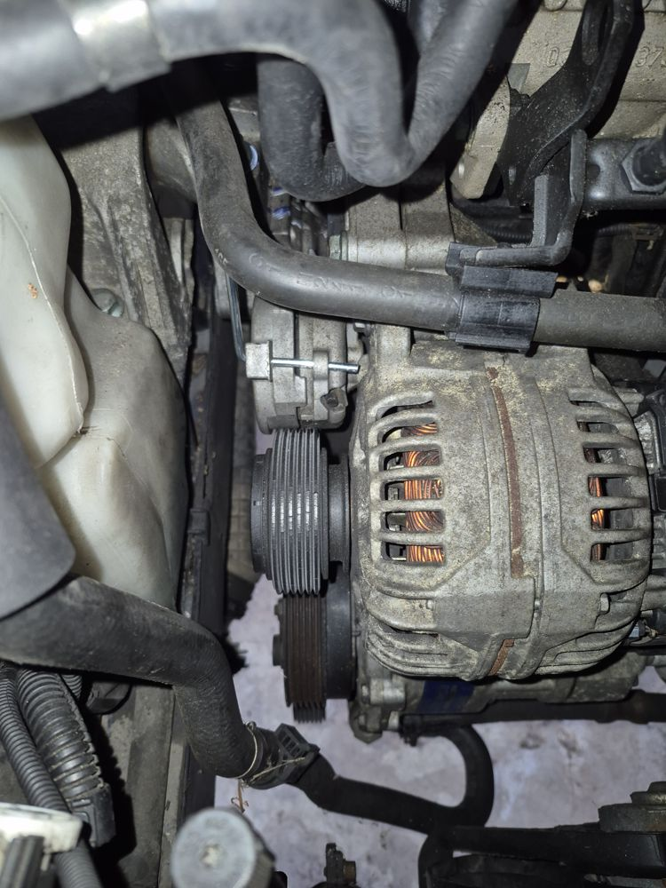
Dein Foto vom 15.11. So soll es aussehen: Der L-Stift steckt quer im Spannelement, der Keilrippenriemen ist ab. Darunter siehst du die Scheibe vom Generator.
Beutel 10Nichts. Der L-Stift bleibt bis Schritt 26 im Spannelement stecken.
Mach diese Fotos und schick sie mir, bevor du weiterbaust:
Alter Riemen, Rippenseite nach außen gebogen
Spannelement von vorn und von der Seite
Kurzes Video: Rolle des Spannelements von Hand andrehen
Kurzes Video: Riemenscheibe des Generators in beide Richtungen drehen
Ich achte auf Risse im Riemen, Spiel oder Rost am Drehpunkt des Spannelements, eine raue oder wackelnde Rolle und darauf, ob der Freilauf in genau einer Richtung sperrt. Drehe auch die Scheiben von Servopumpe und Klimakompressor: Sie müssen leise und ohne Spiel laufen.
Thema S · Schritte S1 und S2 · neu am 19.11.
Stoßfänger und alten Scheinwerfer ausbauen
Beim Golf 4 kommt der Scheinwerfer nur heraus, wenn der vordere Stoßfänger ab ist. So steht es im VW-Handbuch. Jetzt passt es gut: Das Auto steht schon auf Böcken, die Batterie ist seit Schritt 2 abgeklemmt, und die rechte Radhausschale ist seit Schritt 9 ab.
Warum die Schritte S heißen
Damit sich keine Nummer und kein Beutel verschiebt, heißen die neuen Schritte S1 bis S4. Die Schritte 1 bis 27 bleiben genau wie vorher.
S1 und S2 machst du jetzt, vor Schritt 11.
S3 und S4 kommen zwischen Schritt 25 und Schritt 26. Erst wenn der Zahnriemen fertig ist, baust du den neuen Scheinwerfer ein.
Neue Beutel: S1 für den Stoßfänger, S2 für den Scheinwerfer. Stell sie im Karton zwischen Beutel 10 und Beutel 11.
Ehrlich gesagt: Beim Zahnriemen selbst hilft dir der Ausbau nur ein wenig. Der Riemen liegt hinter dem Radkasten. Etwas mehr Platz hast du oben rechts am Motorlager (Schritte 12 und 25) und beim Einbau des Ladeluftrohrs (26.1). Der eigentliche Vorteil: Du baust nichts doppelt aus.
Zwei Videos zum Scheinwerfer
Beide sind vom Kanal Autogedöns, auf Deutsch, an einem Golf 4. In jedem Schritt stehen wieder einzelne Abspiel-Knöpfe.
Die Videos sind kurz und zeigen nicht jede Schraube. Die Anzahl der Schrauben stammt aus dem VW-Handbuch. Wo es nicht passt: ein Foto an mich.
Schritt S1
Stoßfänger vorn abnehmen
Werkzeug für diesen Schritt
Torx T25: Bit mit Ratsche oder Schraubendreher. Für die kleinen Radhaus-Schrauben eventuell T20
Kunststoff-Hebelwerkzeug, oder ein flacher Schraubendreher, die Spitze mit Klebeband umwickelt
Decke oder großer Karton zum Ablegen
Ein Helfer für das Abnehmen
Die Batterie bleibt abgeklemmt. Vorher ein Foto der ganzen Front machen, gerade von vorn.
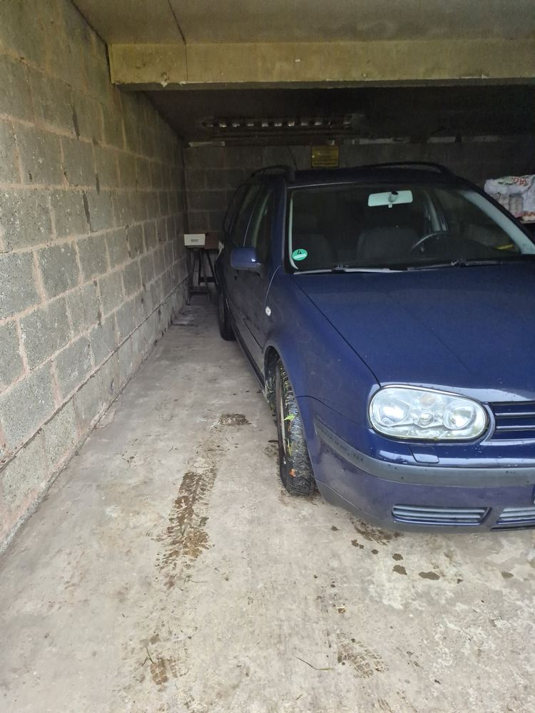
Dein Foto vom 13.11. So sah die Front vorher aus. Ein zusätzliches Foto gerade von vorn hilft später beim Ausrichten.
Kühlergrill oben lösen. Der Grill ist nur geclipst. An seiner Oberkante sitzen mehrere Rastnasen. Jede Rastnase nach unten drücken, mit dem Finger oder dem Hebelwerkzeug, und den Grill dort ein Stück nach vorn ziehen.
▶ C · 0:23–1:25 65 sDer ganze Grill-Ausbau am Stück, für S1.2 bis S1.4: oben lösen, nach oben herausziehen, ablegen.
Grill nach oben herausziehen. Unten steckt er nur lose im Stoßfänger. Gerade nach oben ziehen, nicht nach vorn reißen.
Grill ablegen. Durch einen Schlitz im Grill geht der Hebel, mit dem man die Motorhaube vorn entriegelt. Der Grill hängt deshalb noch am Auto. Mach es wie im Video: Den Grill oben quer auf den Motorraum legen. Lässt sich der Hebel leicht durch den Schlitz fädeln, kannst du den Grill auch ganz abnehmen. Den Seilzug nicht aushängen.
Kappen der Scheinwerfer-Waschdüsen abnehmen, links und rechts. Die Düse selbst bleibt am Auto, nur die lackierte Kappe muss ab. 1. Die Kappe an der Kante fassen und gerade nach vorn ziehen. Die Düse fährt dabei gegen eine Feder ein paar Zentimeter aus dem Stoßfänger. Festhalten. 2. Die Kappe vom Düsenhalter abclipsen: Sie sitzt mit kleinen Rastnasen an den Seiten. Vorsichtig, die Nasen brechen leicht. 3. Die Düse langsam zurückgleiten lassen. Sie rutscht durch das Loch nach hinten. Einfacher zu zweit: Einer hält die Düse, der andere clipst die Kappe ab. So steht es im VW-Werkstatthandbuch.
in den Karton
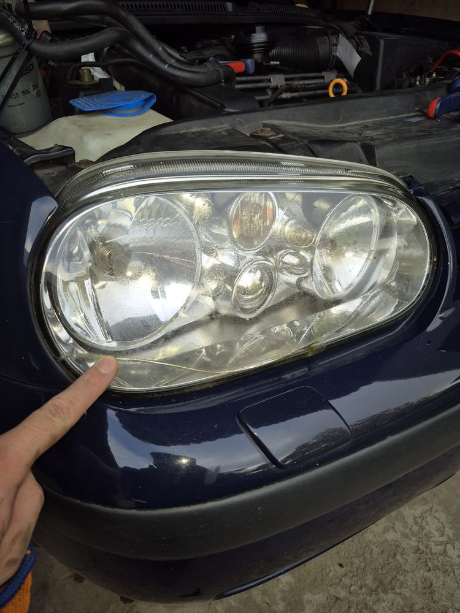
Dein Foto vom 13.11. Die lackierte Kappe im Stoßfänger unter dem Scheinwerfer ist die Waschdüse. Sie bleibt dran.
3 Schrauben oben herausdrehen, Torx T25. Sie sitzen in einer Reihe oben am Stoßfänger, dort wo der Grill war. Dazu 2 Schrauben ganz außen: je eine oben links und oben rechts, direkt neben dem Scheinwerfer, an der Lasche des Stoßfängers.
in Beutel S1
▶ C · 1:26–1:57 34 sWo die Schrauben sitzen, für S1.6 bis S1.8: 3 oben, dann im Radkasten.
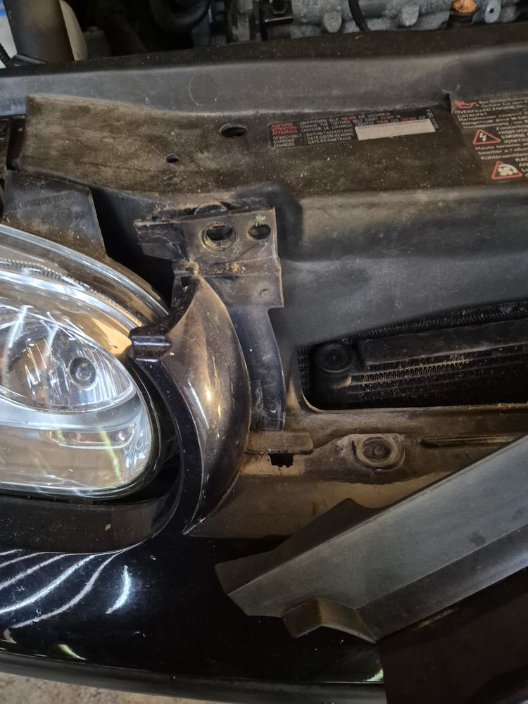
Dein Foto vom 20.11. Hier saß die äußere Schraube: an der Lasche des Stoßfängers oben neben dem Scheinwerfer. Auf der anderen Seite genauso.
Radkasten rechts. Die Schale ist seit Schritt 9 ab, die Schrauben dort sind meist schon heraus. Schau am Rand des Stoßfängers im Radlauf nach. Steckt noch eine Schraube: heraus damit.
in Beutel S1
Radkasten links. Hinter das Rad greifen. Am Rand, wo Radhausschale und Stoßfänger zusammenstoßen, die Schrauben T25 herausdrehen. Im Video sind es 3, laut Handbuch bis zu 4.
in Beutel S1
Lüftungsgitter unten ausclipsen, links und rechts im Stoßfänger. Oben am Gitter sitzt ein Clip. Den Clip nach unten drücken, das Gitter oben nach vorn kippen und herausnehmen. Unten hält es nur mit Nasen.
Schrauben hinter den Gittern herausdrehen, T25, eine hinter jedem Gitter. Schau auch an der Unterkante des Stoßfängers: Steckt dort noch eine Schraube, auch heraus.
Waschdüsen prüfen. Beide Düsen müssen durch ihre Löcher nach hinten gerutscht sein und frei vom Stoßfänger stehen. Der schwarze Zylinder mit dem Schlauch bleibt am Auto. Es wird kein Schlauch getrennt. Hängt eine Düse noch im Loch: die Kappe ist noch drauf, zurück zu S1.5.
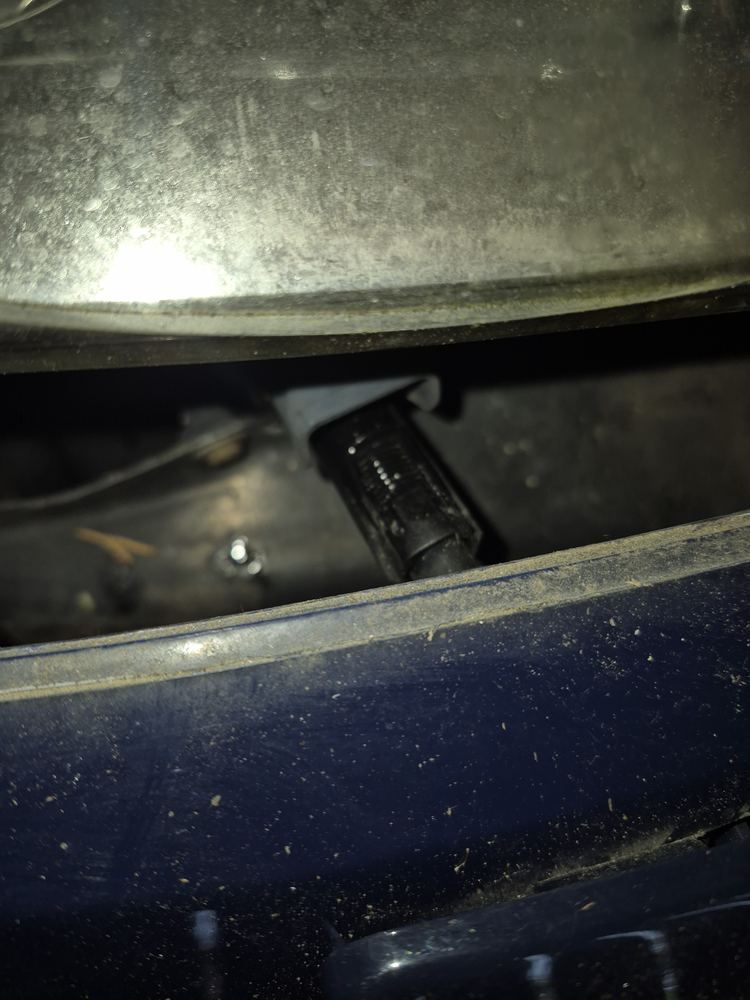
Dein Foto vom 20.11. Der Wischwasserschlauch an der Waschdüse, von oben durch den Spalt zwischen Scheinwerfer und Stoßfänger: schwarzer geriffelter Schlauch im grauen Steckstück.
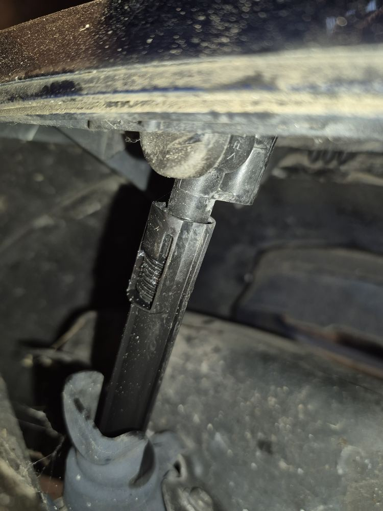
Dein Foto vom 20.11. Die Waschdüse von unten: der schwarze Zylinder steckt oben im Stoßfänger und unten in einem grauen Halter.
Temperaturfühler lösen. Vorn unten im Stoßfänger steckt ein kleiner Fühler mit Kabel. Entweder den Stecker abziehen oder, wie im Video, den Fühler aus dem Stoßfänger clipsen. Er bleibt am Auto hängen.
▶ C · 3:34–4:26 55 sTemperaturfühler lösen, dann den Stoßfänger abnehmen. Für S1.14 und S1.15.
Stoßfänger abnehmen und auf die Decke legen, lackierte Seite nach oben. Die Gitter kommen in denselben Karton.
in den Karton
So findest du es
Der Stoßfänger ist die große lackierte Kunststoffschale vorn, in Bild S1 das Teil 1. Er ist nur geschraubt und geclipst. Der Metallträger dahinter bleibt am Auto.
Wenn es klemmt
Der Stoßfänger bewegt sich nicht: Meist steckt noch eine Schraube. Am häufigsten ist es eine im Radkasten oder hinter einem Lüftungsgitter. Nicht mit Gewalt ziehen.
Ein Clip bricht: Das ist normal bei einem alten Auto. Den Clip notieren und nachkaufen. Er kostet wenige Cent.
Eine Schraube dreht durch: Sie sitzt in einer Blechmutter, die sich mitdreht. Die Blechmutter von hinten mit einer Zange festhalten.
Beutel S17 Schrauben T25 vom Stoßfänger, dazu die 2 äußeren Schrauben oben neben den Scheinwerfern, Radhaus-Schrauben und Blechmuttern. Grill und Gitter in den Karton.
Foto-Kontrolle S · Front ohne Stoßfänger
Schick mir ein Foto der offenen Front, auf den Scheinwerfer gerichtet. Dann kreise ich dir die Schrauben für Schritt S2 ein.
Schritt S2
Alten Scheinwerfer ausbauen, neuen vorbereiten
Werkzeug für diesen Schritt
Torx T25
Kleiner flacher Schraubendreher für die Steckerverriegelung
Saubere Handschuhe oder ein Tuch für die Birnen
Die 2 oberen Schrauben T25 herausdrehen. Sie sitzen an den Laschen an der Oberkante des Scheinwerfers, du siehst sie von oben.
in Beutel S2
▶ D · 0:24–1:08 47 sDie Schrauben T25 oben und unten, dann der versteckte Stecker.
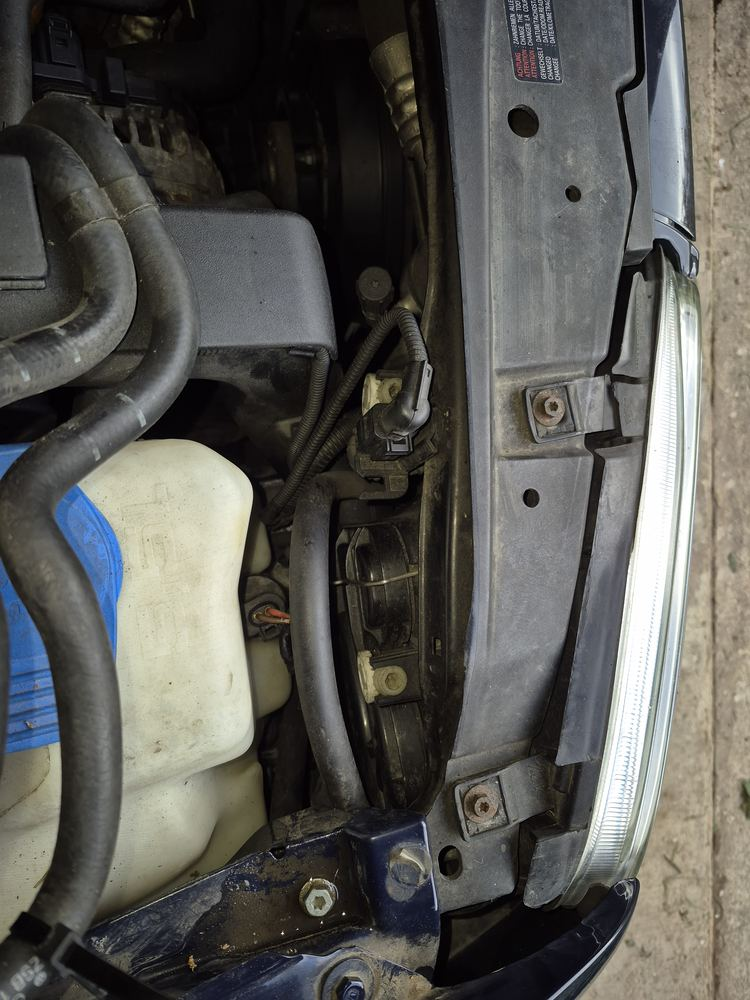
Dein Foto vom 13.11. Der Bereich hinter dem rechten Scheinwerfer von oben. Nach der Foto-Kontrolle S kreise ich dir die Schrauben genau ein.
Die 2 unteren Schrauben T25 herausdrehen. Du siehst sie jetzt von vorn, wo der Stoßfänger war. Alle 4 in Beutel S2.
in Beutel S2
Den Scheinwerfer nach vorn ziehen, so weit das Kabel reicht.
Hinten den großen Stecker entriegeln und abziehen. Am Stecker ziehen, nicht am Kabel.
Dein Foto vom 20.11. Oben der neue, unten der alte Scheinwerfer von vorn. Gleiche Bauart: beide mit der kleinen Linse in der Mitte und dem Blinker darunter.
Gleicher Stecker? Passt etwas nicht: Foto von beiden nebeneinander an mich, nichts umbauen.
Birnen prüfen: Sind im neuen Birnen und Fassungen drin? Abblendlicht H7, Fernlicht H1, Nebel H3 (falls vorhanden), Standlicht 5 W, Blinker 21 W. Was fehlt, vom alten übernehmen. Das Glas der Birnen nicht mit bloßen Fingern anfassen.
Dein Foto vom 20.11. Oben der neue, unten der alte Scheinwerfer, beide von hinten. Im neuen fehlen noch die Birnen.
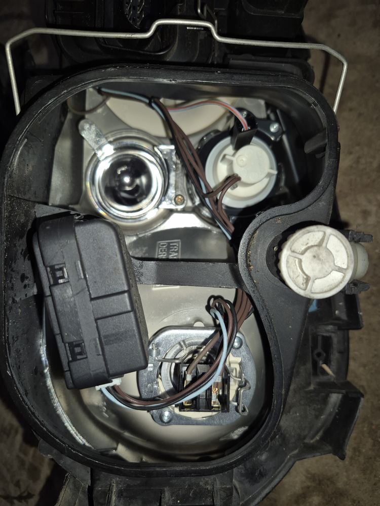
Dein Foto vom 20.11. Der alte Scheinwerfer innen: unten die Abblendlicht-Birne H7 mit ihrem Stecker, gehalten vom Drahtbügel.
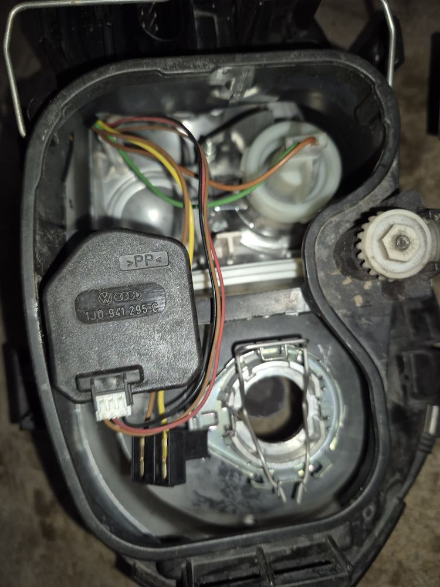
Dein Foto vom 20.11. Der neue innen: Der Platz für die H7 ist leer, der Stecker mit dem gelben und braunen Kabel liegt lose daneben. Das schwarze Teil ist der Stellmotor.
Stellmotor der Leuchtweite: Hat der neue Scheinwerfer schon einen, die nächsten 4 Unterschritte (S2.11 bis S2.14) einfach abhaken. Bei dir ist das so: Auf deinem Foto sitzt im neuen schon der Stellmotor (Teilenummer 1J0 941 295 C).
Am alten Scheinwerfer die Kappe hinten abnehmen und den Stecker vom Stellmotor abziehen.
Den rechten Stellmotor im Uhrzeigersinn drehen. Beim linken wäre es gegen den Uhrzeigersinn.
Den Motor herausziehen und dabei den Kugelkopf aus der Aufnahme am Reflektor ziehen.
Im neuen Scheinwerfer umgekehrt einsetzen. Der Kugelkopf muss hörbar in der Aufnahme am Reflektor sitzen. Stecker und Kappe wieder drauf.
Den neuen Scheinwerfer fertig vorbereitet in einen Karton legen, Glas nach oben. Eingebaut wird er erst in Schritt S3, nach dem Zahnriemen.
neuer Scheinwerfer in den Karton
So findest du es
Die oberen Schrauben sitzen an den Laschen an der Oberkante des Scheinwerfers. Die unteren siehst du jetzt von vorn, wo vorher der Stoßfänger war.
Wenn es klemmt
Der Scheinwerfer klemmt beim Herausziehen: Das passiert öfter. Prüfe, ob alle 4 Schrauben ganz heraus sind, dann mit gleichmäßigem Zug nach vorn ziehen.
Eine Halterlasche am alten Scheinwerfer bricht: egal, er kommt ja weg. Am neuen die Laschen schonen.
Der Stecker geht nicht ab: Die Verriegelung mit dem kleinen Schraubendreher anheben und gleichzeitig ziehen.
Beutel S24 Schrauben T25 vom Scheinwerfer.
Für Schritt 11
Stell die Füße der Motorbrücke rechts mittig auf die Kotflügelkante. Nicht ans vordere Ende neben die leere Öffnung, wo der Scheinwerfer saß.
Thema D · Schritte 11 bis 13
Motor abstützen, Motorlager und Motorhalter ausbauen
Der Zahnriemen läuft zwischen Motorblock und Motorhalter hindurch. Deshalb müssen Motorlager und Motorhalter heraus, und der Motor hängt solange an einer Abstützung.
Zwei Videos zu den Schritten 11 bis 27
Ich habe beide Videos durchgesehen. Ab Schritt S1 ist jeder Schritt in kleine Unterschritte geteilt, zum Beispiel 11.1, 11.2. Jeder hat links ein eigenes Kästchen zum Abhaken; die Häkchen bleiben auf deinem Handy gespeichert. Öffnest du die Seite neu, springt sie direkt zum nächsten offenen Unterschritt; der orange Knopf unten rechts bringt dich jederzeit dorthin zurück. Schritte, die du oben als „erledigt“ markierst, klappen sich ein. Unter jedem Unterschritt steht, welches Bild dazu gehört (antippen = groß) und in welchen Beutel die Schrauben kommen oder aus welchem du sie nimmst. Die Abspiel-Knöpfe (▶) stehen direkt beim passenden Unterschritt, darunter deine eigenen Fotos vom Ausbau. In den erledigten Schritten 1 bis 10 stehen sie wie bisher im Kasten „Im Video ansehen“. Ein Tipp auf ▶ spielt den Abschnitt direkt hier ab, ohne zu YouTube zu wechseln, am Handy bildschirmfüllend. Er startet an der richtigen Stelle und hält am Ende des Abschnitts an. Startet er nicht von selbst, einmal ins Video tippen. „Zurück zur Anleitung“ oder die Zurück-Taste des Handys bringt dich wieder genau an deine Stelle. Die Zahl hinten (z. B. 25 s) ist die Länge des Abschnitts.
Video A · KfzBros · Deutsch · 40 Minuten:1.9 TDI AXR / ATD Zahnriemenwechsel + Wasserpumpe. Genau dein Motor, aber in einem Skoda Fabia eingebaut. Riementrieb, Spezialwerkzeug, Spannrolle und Wasserpumpe sind wie bei dir. Motorlager und Motorhalter sehen beim Fabia anders aus. Dafür ist Video B besser.
Video B · HOW TO DO · Englisch · 12 Minuten:VW Golf MK4 1.9 TDI Timing Belt Kit. Golf 4 mit AXR wie deiner. Kurz, aber er zeigt Motorlager und Motorhalter am Golf. Achtung: Bei 7:02 sagt er 50 Nm für die Wasserpumpe. Richtig sind 15 Nm, die er bei 6:32 selbst nennt.
Deutsche Untertitel für Video B: im Video auf das Zahnrad tippen, dann Untertitel, dann Automatisch übersetzen und Deutsch wählen. Wo sich ein Video und diese Anleitung widersprechen, gilt die Anleitung. Sie folgt dem VW-Handbuch.
Schritt 11
Motor abstützen
Bild 11. Zwei Wege, den Motor zu halten. Blick von vorn auf das Auto.
Werkzeug für diesen Schritt
Motorbrücke mit Spindel und Haken (oder Kette)
Zwei dicke Lappen oder ein Stück Pappe für die Auflagen
Ohne Brücke: Rangierwagenheber und ein Holzklotz, mindestens 15 × 15 cm und 4 cm dick
Motorhaube ganz öffnen. Auf beide Kotflügelkanten Lappen oder Pappe legen.
Motorbrücke quer über den Motorraum stellen. Ihre Füße stehen auf den Kotflügelkanten: der Kante zwischen Kotflügel und Motorraum, wo der Kotflügel angeschraubt ist. Nicht auf die gewölbte Fläche.
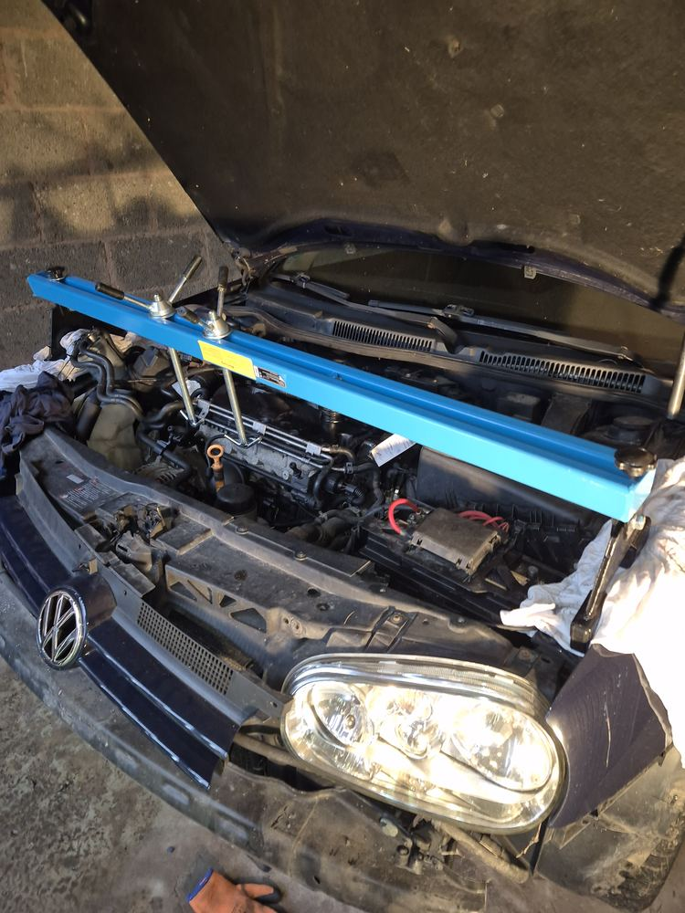
Dein Foto vom 20.11. Deine Motorbrücke quer über dem Motorraum, zwei Spindeln mit Haken über der Riemenseite.
Rechts den Fuß mittig auf die Kante stellen, nicht ans vordere Ende neben der leeren Scheinwerferöffnung. In der Mitte ist das Blech doppelt und trägt.
Prüfen: Beide Füße liegen satt auf, die Brücke kippelt nicht.
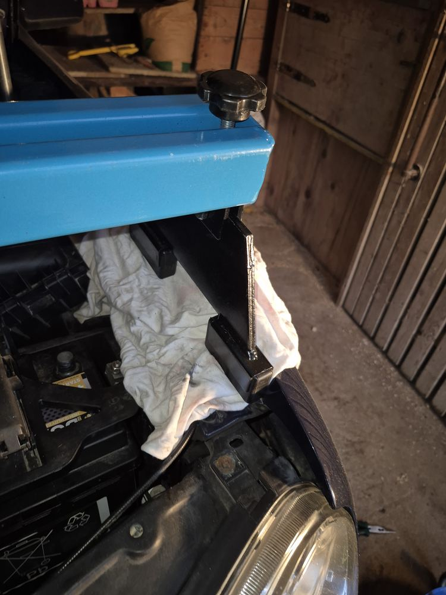
Dein Foto vom 20.11. Ein Fuß der Brücke auf der Kotflügelkante, mit Lappen darunter.
Die Spindel mit dem Haken über die Riemenseite schieben, also über die Beifahrerseite. Sie hängt etwa senkrecht über dem Motorlager.
Transportöse suchen: eine stabile Metalllasche mit rundem Loch, oben am Zylinderkopf auf der Riemenseite, nahe am oberen Zahnriemenschutz. Nicht sicher? Foto von oben an mich, bevor du einhängst.
Haken in die Öse hängen.
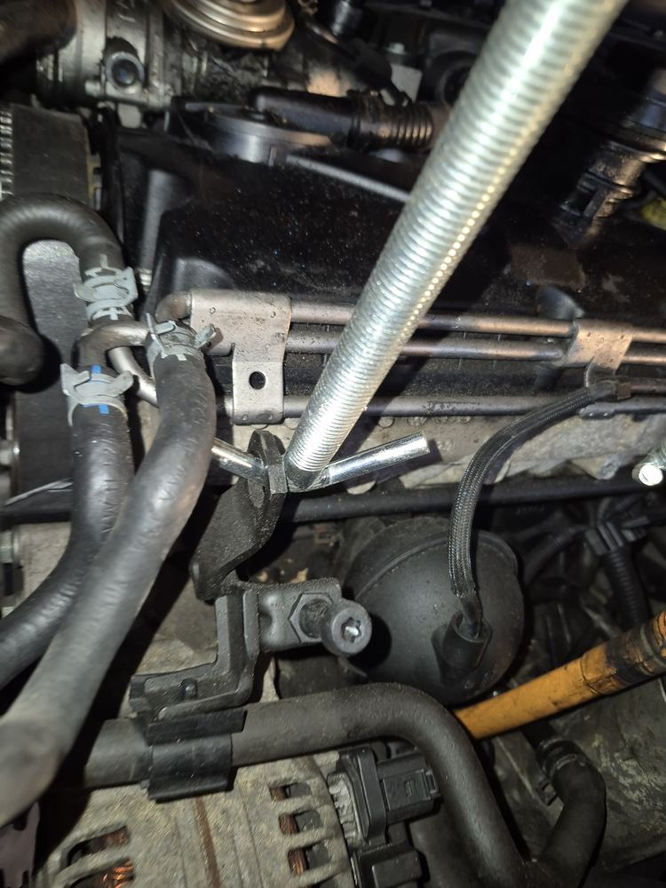
Dein Foto vom 20.11. Der Haken in der Lasche mit dem runden Loch am Zylinderkopf, Riemenseite.
Spindel drehen, bis die Kette straff ist und sich die Spindel deutlich schwerer drehen lässt. Jetzt trägt die Brücke den Motor. Nicht weiter anheben.
Kontrolle: Deine Striche aus Schritt 7 am Motorlager passen noch genau zusammen.
So findest du es
Die Transportöse ist eine stabile Metalllasche mit Loch, oben am Zylinderkopf auf der Riemenseite. Die Ölwanne ist die Metallwanne ganz unten am Motor, in Bild 9a das Teil 7.
Ohne Motorbrücke: Rangierwagenheber mit einem breiten, dicken Holzklotz unter die Ölwanne stellen und nur so weit pumpen, bis das Motorlager entlastet ist. Der Klotz muss die Ölwanne großflächig tragen.
▶ B · 1:31–2:00 32 sGolf 4: Motor mit Wagenheber und Holz unter der Ölwanne abstützen.
Das Motorlager darf nur bei abgestütztem Motor gelöst werden. Solange der Motor nur am Wagenheber hängt, nicht unter dem Auto liegen.
Wenn es klemmt
Der Haken passt nicht durch die Öse: eine kurze Kette oder einen Schäkel dazwischen hängen.
Die Brücke kippelt: Füße weiter nach außen auf die Kanten setzen, bis beide satt aufliegen.
Du stützt mit dem Wagenheber: Nur so weit pumpen, bis sich der Wagenheber gerade nicht mehr leicht pumpen lässt. Der Klotz liegt mittig und flach unter der Ölwanne, nicht unter der Ablassschraube.
Schritt 12
Motorlager ausbauen
Bild 12. Motorlager von oben. Die Werte gelten für den Einbau in Schritt 25.
Werkzeug für diesen Schritt
Ratsche 1/2 Zoll mit langer Verlängerung
Nüsse 16 und 18 mm: nimm die, die ohne Spiel auf dem Kopf sitzt
Ringschlüssel in derselben Größe, falls die Nuss nicht ansetzbar ist
Rostlöser und Drahtbürste
Prüfen, ob deine Striche aus Schritt 7 noch gut zu sehen sind. Sonst jetzt nachziehen.
Die Schraubenköpfe mit der Drahtbürste säubern, damit die Nuss ganz aufgeht.
Die Schrauben des Halters (2) herausdrehen: das schwarze Blech, das vom Motorlager schräg nach unten zur Karosserie geht. Auf die Pappe.
in Beutel 12
▶ B · 2:14–2:35 24 sGolf 4: Motorlager mit seinen Schrauben zur Karosserie und zum Motor.
Die 2 Schrauben zum Motorhalter (3) herausdrehen. Sie gehen von oben senkrecht durch das Motorlager. Auf die Pappe. Beschrifte auf der Pappe, welche Schraube wo saß.
in Beutel 12
Die Schrauben zur Karosserie (1) herausdrehen. Video B zählt drei zur Karosserie und zwei zum Motor: zähl bei dir nach. Auch diese auf die Pappe und beschriften. Du hast für alle 6 Schrauben neue. Die alten bleiben nur als Muster in Beutel 12, bis das Lager in Schritt 25 wieder sitzt.
in Beutel 12
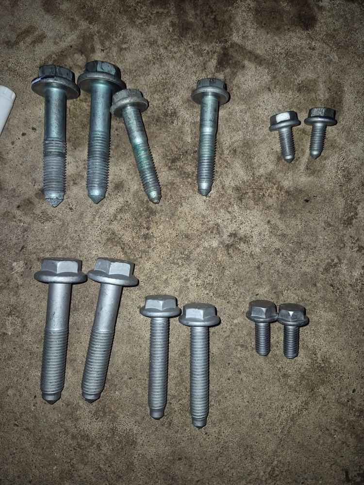
Dein Foto vom 20.11. Oben die alten, unten die neuen Schrauben fürs Motorlager: 2 lange, 2 mittlere, 2 kurze. Jede neue kommt an den Platz der gleich großen alten.
Das Motorlager nach oben herausnehmen.
▶ A · 9:18–10:18 63 sGleicher Motor im Fabia: Motorlager raus. Das Lager sieht dort anders aus, der Ablauf ist ähnlich.
Geht es schwer: die Spindel eine halbe Umdrehung höher oder tiefer drehen, bis es frei kommt.
Die Schrauben sitzen fest. Mit langem Hebel gleichmäßig ziehen, nicht ruckartig. Kein Schlagschrauber, solange der Motor an der Brücke hängt.
So findest du es
Das Motorlager ist ein Aluminiumteil mit Gummikern auf der Beifahrerseite, genau dort, wo vorher Ausgleichsbehälter und Servoöl-Behälter saßen. Es verbindet die Karosserie mit dem Motorhalter. In Übersicht D1 ist es das Teil 3.
Die alten Schrauben (1) gleich entsorgen, damit sie nicht versehentlich wieder eingebaut werden.
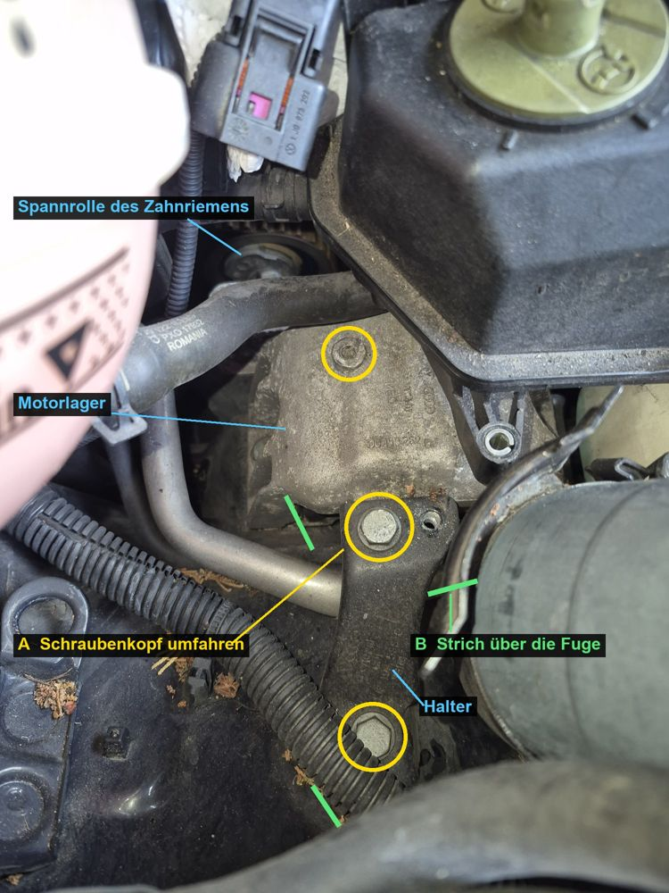
Dein Foto vom 13.11. Das Motorlager mit deinen Strichen. Gelb: Schrauben, grün: Striche über die Fugen. Damals saßen die Behälter noch.
Wenn es klemmt
Die Nuss rutscht: Kopf säubern und eine Sechskant-Nuss nehmen, keine Zwölfkant-Nuss.
Eine Schraube bewegt sich nicht: Rostlöser drauf, 10 Minuten warten, dann noch einmal.
Eine Schraube dreht durch, ohne herauszukommen: aufhören und mir ein Foto schicken.
Beutel 12Pappe mit allen 6 alten Schrauben vom Motorlager, beschriftet. Sie sind nur noch Muster: Eingebaut werden in Schritt 25 die 6 neuen.
Foto-Kontrolle 6 · Motorlager
Mach diese Fotos und schick sie mir, bevor du weiterbaust:
Motorlager von oben, von unten und von allen Seiten
Gummikern aus der Nähe
Ich achte auf Risse im Gummi, einen abgerissenen Kern und ausgetretene Flüssigkeit. Ein müdes Motorlager macht sich oft schon vorher durch Vibrationen im Leerlauf bemerkbar.
Schritt 13
Motorhalter vom Motorblock abschrauben
Bild 13. Der Motorhalter sitzt mit 3 Schrauben am Motorblock. Einbauwert 45 Nm.
Werkzeug für diesen Schritt
Nuss 16 mm (so im Video A)
Ratsche mit kurzer und mittlerer Verlängerung
Kardangelenk zwischen Verlängerung und Nuss: Für die hintere obere Schraube empfiehlt Video A bei 11:40 genau das
Ringschlüssel 16 mm
Die 3 Schrauben suchen: zwei oben, eine unten. Sie gehen waagerecht durch den Motorhalter in den Motorblock. Mit der Taschenlampe von oben und durch den Radkasten.
▶ B · 2:50–3:57 70 sGolf 4: Motorhalter mit 3 Schrauben, die letzte sitzt unten.
Den Motor mit der Spindel etwa eine Umdrehung anheben. Dabei Schläuche und Kabel beobachten.
Die untere Schraube herausdrehen. Alle 3 auf die Pappe.
in Beutel 13
Der Motorhalter bleibt vorerst drin. Am Golf ist zwischen Motor und Karosserie kaum Platz, und der mittlere Zahnriemenschutz liegt noch davor. Nicht ziehen, nicht höher drehen. Dreh eine obere Schraube 3 bis 4 Gänge von Hand ein, damit der Halter nicht herunterfällt. Die anderen 2 Schrauben bleiben in Beutel 13. Weiter geht es mit ihm in 14.7.
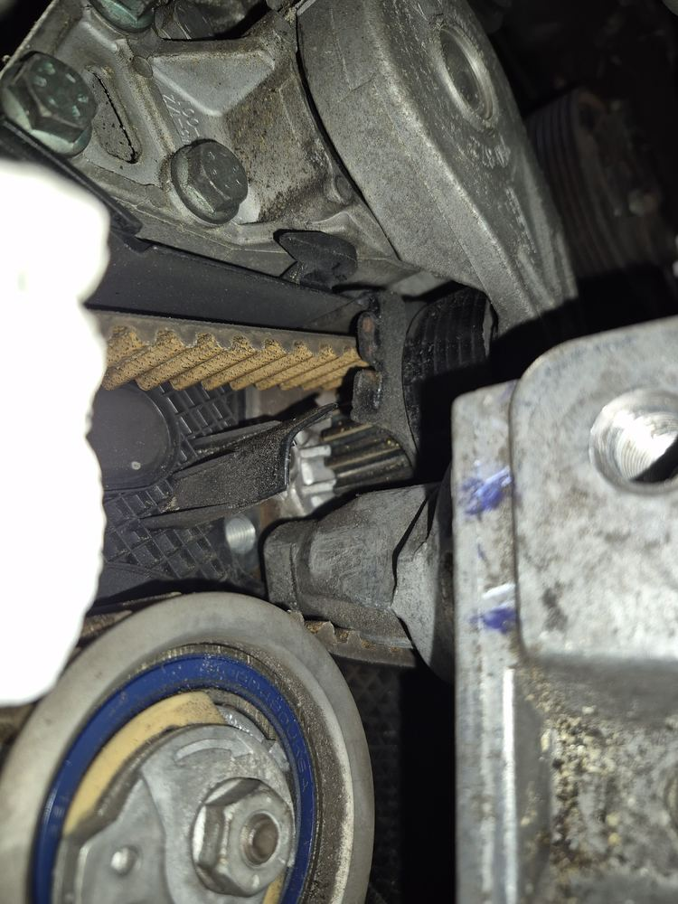
Dein Foto vom 20.11. Der Arm des Motorhalters (Bildmitte) geht nach hinten zum Block. Der Zahnriemen läuft zwischen Halter und Block durch.
Den Motor wieder auf mittlere Höhe bringen, so dass er ruhig an der Brücke hängt.
So findest du es
Der Motorhalter ist das Aluminium-Gussteil, das direkt am Motorblock verschraubt ist und auf dem das Motorlager saß. In Übersicht D2 ist es das Teil 3. Du erreichst seine Schrauben durch den Radkasten.
Immer nur wenige Millimeter anheben oder absenken und dabei Schläuche und Kabel beobachten.
Wenn es klemmt
Der Motorhalter kommt nicht heraus: Prüfe, ob das Spannelement des Keilrippenriemens im Weg ist. Dann das zuerst abschrauben, vorher ein Foto an mich.
Am Golf geht der Halter oft nicht ganz heraus, weil zwischen Motor und Karosserie der Platz fehlt (Video B). Dann bleibt er lose im Motorraum. Wie es weitergeht, steht in 14.7 und 14.8a.
Die hintere obere Schraube ist mit der Nuss nicht zu erreichen: Ringschlüssel nehmen und in kleinen Schritten drehen.
Beutel 133 Schrauben des Motorhalters, auf die Pappe stecken
Thema E · Schritte 14 und 15
Riementrieb freilegen und Motor arretieren
Erst kommen Riemenscheibe und die beiden unteren Schutzteile ab. Dann werden Kurbelwelle und Nockenwelle in der OT-Stellung blockiert. Das ist der wichtigste Teil der ganzen Arbeit.
Schritt 14
Schwingungsdämpfer, mittleren und unteren Zahnriemenschutz abnehmen
So findest du es
Schwingungsdämpfer: die große Riemenscheibe ganz unten, über die der Keilrippenriemen lief.
Mittlerer Zahnriemenschutz: schwarzes Kunststoffteil oberhalb der Riemenscheibe.
Unterer Zahnriemenschutz: schwarzes Kunststoffteil hinter der Riemenscheibe. Es wird erst sichtbar, wenn die Scheibe ab ist.
Bild 14b. Schwingungsdämpfer von vorn. Die vier Löcher sind versetzt, er passt nur in einer Stellung.
Eine passende Nuss mit langem Knebel, ohne Ratsche, auf die große Zentralschraube der Kurbelwelle setzen. Nur zum Gegenhalten: Die Zentralschraube selbst nie lösen.
Den Knebel so abstützen oder von einem Helfer halten lassen, dass sich die Kurbelwelle nicht mitdrehen kann. Das brauchst du nur, wenn sich die Kurbelwelle beim Lösen der 4 Schrauben mitdreht. Bleibt sie stehen, geht es ohne. Die Zentralschraube löst sich dabei nicht: Du hältst in Richtung „fester“ gegen.
Unteres Luftrohr abziehen. Das gerippte schwarze Rohr liegt quer vor dem Schwingungsdämpfer. An der Kupplung zum Ladeluftkühler den Drahtbügel mit einem Schraubendreher bis zum Anschlag herausziehen, nicht ganz ab. Am anderen Ende hält eine Lasche das Rohr an der Karosserie. Dort die eine Mutter abschrauben. Das Rohr abziehen und zur Seite drücken. Einen sauberen Lappen in beide Öffnungen stecken.
in Beutel 14
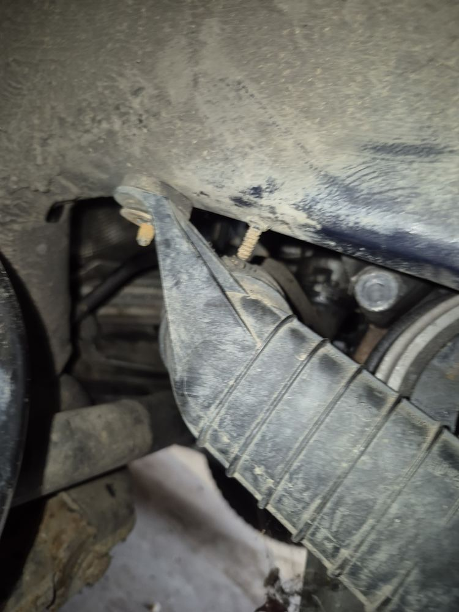
Dein Foto vom 20.11. Die Lasche des Luftrohrs an der Karosserie. Diese eine Mutter hast du abgeschraubt, sie liegt in Beutel 14.
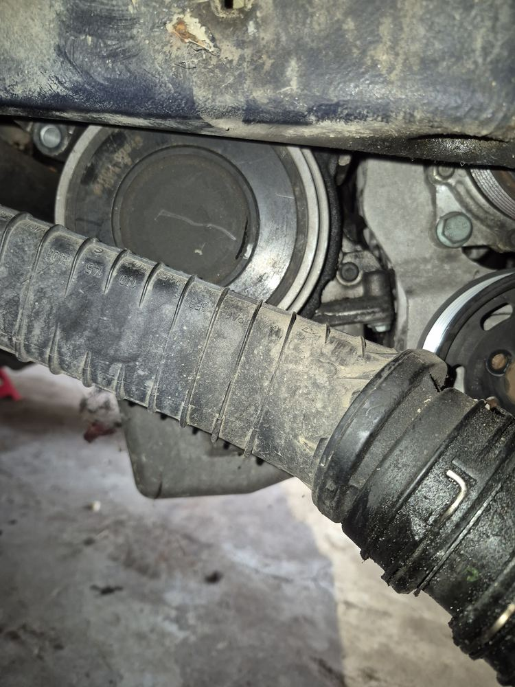
Dein Foto vom 20.11. Das gerippte Luftrohr liegt vor dem Schwingungsdämpfer. Rechts die Kupplung mit dem Drahtbügel. Die Scheibe rechts hinten gehört zur Servopumpe und bleibt dran.
Schwarze Kappe heraushebeln. In der Mitte des Schwingungsdämpfers sitzt ein Staubdeckel aus Kunststoff. Mit einem flachen Schraubendreher am Rand heraushebeln. Er darf zerbrechen. Alle Bruchstücke herausnehmen. Darunter liegen die Zentralschraube und die 4 Schrauben.
in Beutel 14
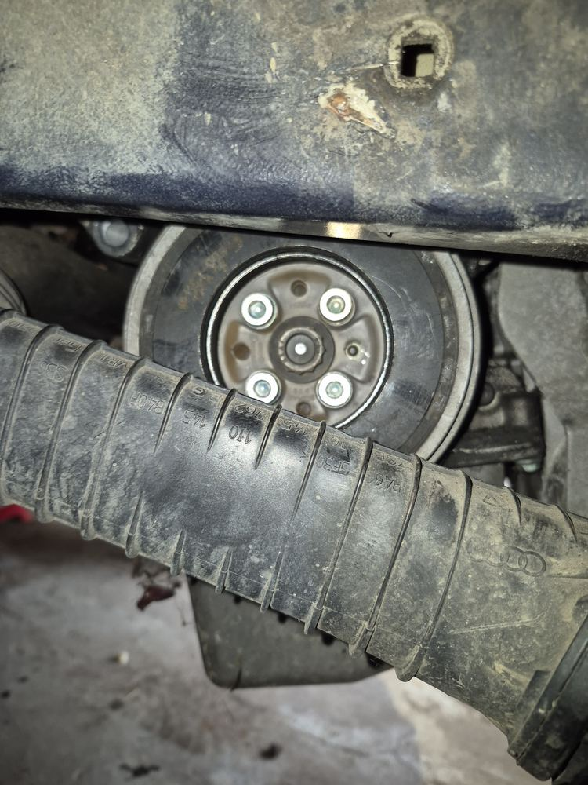
Dein Foto vom 20.11. Kappe ab: in der Mitte die große Zentralschraube, die bleibt fest. Rundherum die 4 Schrauben, nur die kommen heraus.
Den Kopf der 4 Schrauben des Schwingungsdämpfers (Übersicht E1, Teil 6) ansehen und mir ein Foto schicken. Der Schwingungsdämpfer sitzt auf der Kurbelwelle und hat 4 Schrauben um eine große Zentralschraube. Die Scheibe mit 3 Schrauben daneben gehört zur Servopumpe und bleibt eigentlich dran. Innensechskant und Vielzahn (XZN) sehen sich ähnlich. Ein Inbus in einer Vielzahn-Schraube dreht den Kopf rund.
Mit dem genau passenden Bit, ganz eingesteckt und gerade angesetzt, die 4 Schrauben herausdrehen. In Video A ist es Vielzahn M10. Die alten Schrauben in den Müll.
Den Dämpfer gerade nach vorn abziehen und prüfen wie in Bild 14c.
Den unteren Zahnriemenschutz (Teil 5) abschrauben. Er sitzt rund um das Kurbelwellenrad, dort wo der Schwingungsdämpfer war. Kleine Sechskantschrauben rundherum am Rand, meist SW 10. Auf versteckte Schrauben hinten unten achten. Dann abnehmen.
Spannelement des Keilrippenriemens abschrauben. Es sitzt über der Lichtmaschine, der L-Stift steckt noch darin. Sein rundes Teil liegt vor dem mittleren Zahnriemenschutz und hält ihn fest. Den L-Stift nicht ziehen. Die 3 Schrauben lösen, mit denen das Spannelement am Halter sitzt, SW 13. Vorher merken oder fotografieren, welche Schraube wo saß, sie können verschieden lang sein. Das Spannelement mit Stift zur Seite legen.
in Beutel 14
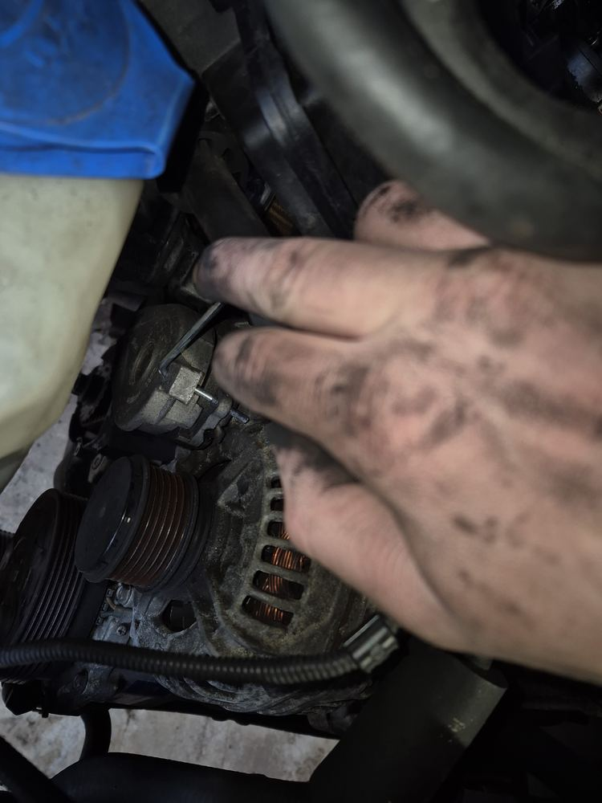
Dein Foto vom 22.11. Das Spannelement des Keilrippenriemens von oben, über der Lichtmaschine. Der L-Stift steckt und bleibt drin.
Den mittleren Zahnriemenschutz (Teil 4) abschrauben. Das ist die schwarze Platte direkt über dem Kurbelwellenrad, hinter dem Motorhalter. Zuerst die eine Schraube des Motorhalters wieder von Hand herausdrehen, damit sich der Halter bewegen lässt. Dann die 3 Schrauben des mittleren Schutzes lösen, SW 10: unten links, unten rechts und eine weit oben, zwischen Karosserie und Motorhalter. Den Halter etwas anheben oder vom Block wegdrücken und den Schutz nach unten herausnehmen. Das Spannelement ist seit 14.6a ab und nicht mehr im Weg.
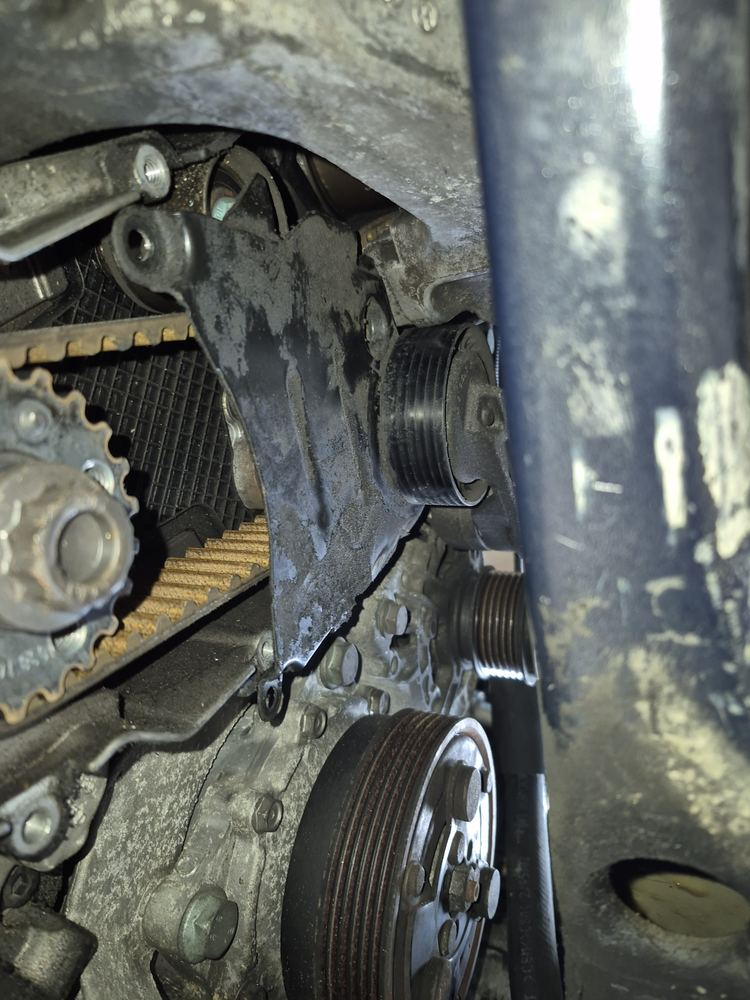
Dein Foto vom 22.11. Unterer Schutz ab. Die dunkle Platte in der Mitte ist der mittlere Schutz. Das runde Teil am Schutz gehört zum Spannelement des Keilrippenriemens und hält ihn fest.
in Beutel 14Halterschraube in Beutel 13
▶ A · 15:28–16:02 37 sMittlerer Zahnriemenschutz: letzte Schraube weit oben lösen, dann den Schutz abnehmen.
Hängt ein Schutz noch: nicht reißen, sondern die letzte Schraube suchen. Im Golf-Video sind es zusammen 6 Schrauben.
Motorhalter: herausnehmen oder lose lassen. Probier jetzt, ob der Halter nach oben herausgeht. Den Motor dabei mit der Spindel etwas hoch und runter bewegen. Im Video A, einem Škoda, geht das. Im Golf-Video B fehlt dafür der Platz: Dann bleibt der Halter lose im Motorraum. Nichts erzwingen. Bleibt er drin: eine obere Schraube wieder 3 bis 4 Gänge von Hand eindrehen, bis der Motor in Schritt 15 gedreht ist. So sitzt der Halter an seinem Platz und kann beim Drehen nicht am laufenden Riemen hängen bleiben.
▶ B · 3:27–3:58 34 sGolf 4: Der Halter geht nicht ganz heraus und wird nur zur Seite gedrückt.
Jetzt liegt der ganze Zahnriementrieb frei wie in Übersicht E2. Alles fotografieren.
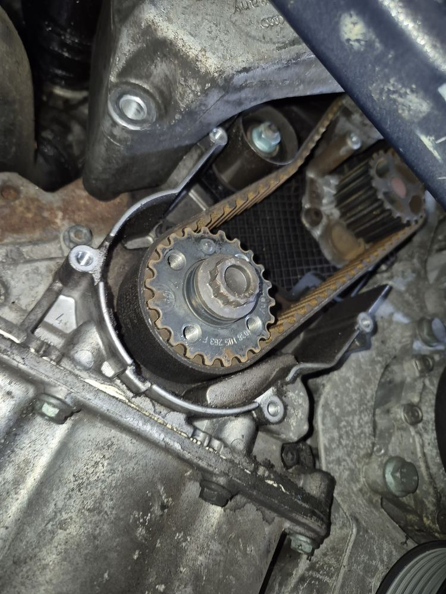
Dein Foto vom 22.11. Der Riementrieb liegt frei. Unten das Kurbelwellenrad, rechts oben das Rad der Wasserpumpe.
Bild 14c. So prüfst du den abgenommenen Schwingungsdämpfer.
Werkzeug für diesen Schritt
Vielzahn-Bit (XZN) M10 oder Innensechskant-Bit, je nach Schraubenkopf
Nuss und lange Ratsche zum Gegenhalten an der Zentralschraube
Nuss SW 10 für die Schrauben des Zahnriemenschutzes
Wenn es klemmt
Die Kurbelwelle dreht beim Lösen mit: Eine zweite Person hält den Knebel an der Zentralschraube fest, du löst die vier Schrauben. Das Auto dafür nicht ablassen, wegen der gebrochenen Feder bleibt es auf den Böcken.
Das Bit sitzt locker: falsche Sorte. Sofort aufhören und das andere Profil probieren.
Beutel 14Schrauben vom mittleren und unteren Zahnriemenschutz. Die 4 alten Schrauben des Schwingungsdämpfers in den Müll.
Foto-Kontrolle 7 · Schwingungsdämpfer und Kurbelwelle
Mach diese Fotos und schick sie mir, bevor du weiterbaust:
Schwingungsdämpfer von vorn und von hinten
Gummiring rundum aus der Nähe
Bereich um das Kurbelwellenrad nach dem Abnehmen des unteren Schutzes
Ich achte auf Risse im Gummiring und auf Öl am Dichtflansch hinter dem Kurbelwellenrad.
Schritt 15
Motor auf OT Zylinder 1 stellen und arretieren
Achtung
Den Motor nur an der Kurbelwelle und nur im Uhrzeigersinn drehen. Niemals an der Nockenwelle drehen. Bei abgenommenem Riemen dürfen sich Kurbelwelle und Nockenwelle nicht mehr bewegen.
So findest du es
Das Kurbelwellenrad ist das kleine Zahnrad ganz unten im Riementrieb, dort wo eben noch die große Riemenscheibe saß. Das Nockenwellenrad ist das große Zahnrad ganz oben. In Übersicht E2 sind es die Teile 5 und 1. OT heißt oberer Totpunkt: Der Kolben von Zylinder 1 steht ganz oben.
Bild 15a. Gedreht wird an der Zentralschraube des Kurbelwellenrads.
15.1 Kurbelwelle langsam im Uhrzeigersinn drehen
Die Nuss auf die Zentralschraube setzen. Nur im Uhrzeigersinn drehen.
▶ A · 16:34–17:48 77 sOT an der Kurbelwelle: Pfeil am Werkzeug und Kerbe am Zahnrad zeigen aufeinander, Kerbe etwa auf 12 Uhr.
Gleichmäßig drehen. Den Widerstand der Verdichtung spürst du, das ist normal. Die Glühkerzen nicht ausbauen: Alte reißen beim Herausdrehen leicht ab.
Drehen, bis die Markierung am Kurbelwellenrad oben steht, etwa auf 12 Uhr. Die Markierung ist ein kleines eingeprägtes Rechteck vorn auf einem Zahn.
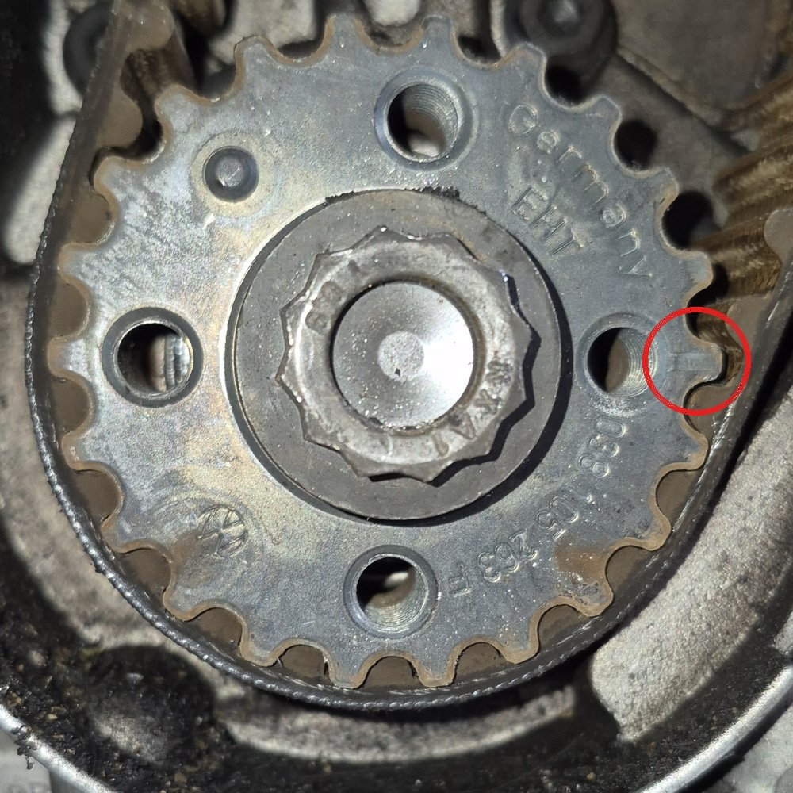
Dein Foto vom 22.11. Die Markierung ist das kleine Rechteck auf einem Zahn, rot eingekreist. Auf dem Foto steht sie auf 3 Uhr. Sie muss nach oben auf 12 Uhr.
Zu weit gedreht? Nicht zurückdrehen, sondern zwei volle Umdrehungen weiter.
15.2 Stellung der Nockenwelle prüfen
Von der Seite auf das Nockenwellenrad schauen. Im Rad ist ein Fenster, darin siehst du eine gezackte Krone. Sie gehört zur Nabe dahinter.
Prüfen: Die gezackte Krone steht oben, etwa auf 12 Uhr. So zeigt es Video A. Steht sie unten, stimmt die Umdrehung nicht: Kurbelwellenstopp abnehmen und die Kurbelwelle eine volle Umdrehung im Uhrzeigersinn weiterdrehen. Einen Pfeil am Zahnriemenschutz brauchst du nicht zu suchen.
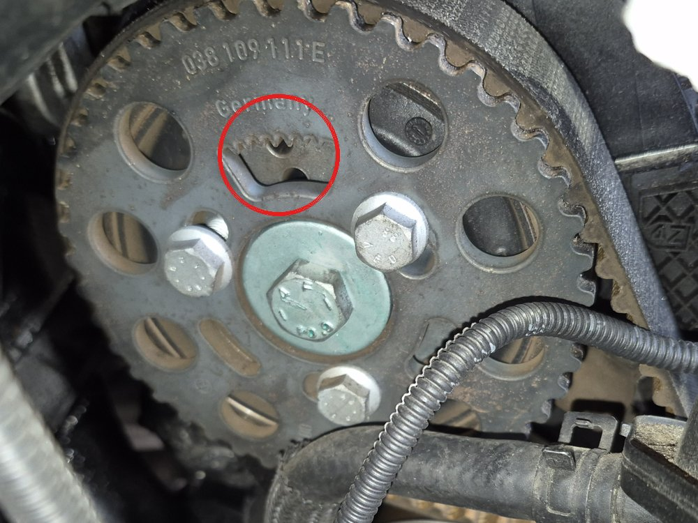
Dein Foto vom 22.11. Die gezackte Krone im Fenster des Nockenwellenrads, rot eingekreist. Sie steht oben auf etwa 12 Uhr, so ist es richtig.
Hinweis
Die Nockenwelle dreht halb so schnell wie die Kurbelwelle. Steht die Markierung der Kurbelwelle oben, die Nase aber nicht am Pfeil, dann fehlt genau eine Kurbelwellenumdrehung.
Bild 15c. Blick von der Seite. Der Stift muss durch Rad und Nabe bis in den Zylinderkopf reichen.
15.3 Nabe mit dem Absteckstift 3359 arretieren
Den Stift 3359 durch das freie Langloch links unten stecken, etwa auf 8 Uhr (Bild 15b, Teil 3).
▶ A · 17:43–18:03 23 sNockenwelle abstecken: Der Stift geht etwa auf 8 Uhr durch das Rad.
Weiterschieben durch die Nabe bis in die Bohrung im Zylinderkopf. Er muss sich mit zwei Fingern einschieben lassen und spürbar tief sitzen.
Geht er nicht hinein: die Kurbelwelle wenige Millimeter im Uhrzeigersinn weiterdrehen und neu probieren. Nie mit Gewalt.
15.4 Kurbelwellenstopp T10050 aufsetzen
Den Kurbelwellenstopp von der Stirnseite in die Zähne des Kurbelwellenrads schieben.
Prüfen: Die Markierung am Rad und die am Werkzeug stehen sich gegenüber (Teil 3).
Prüfen: Der Zapfen des Werkzeugs greift in die Bohrung im Dichtflansch (Teil 2). Der Dichtflansch ist der Aluminiumdeckel rund um die Kurbelwelle, direkt hinter dem Rad.
Sitzt der Zapfen knapp daneben: Stift 3359 herausziehen, Kurbelwelle ein winziges Stück im Uhrzeigersinn drehen, beide Werkzeuge neu setzen.
Achtung
Der Kurbelwellenstopp ist kein Gegenhalter. Nie eine Schraube gegen dieses Werkzeug lösen oder festziehen.
Werkzeug für diesen Schritt
BGS 62644 Teil 3: der Knopfstift, entspricht VW 3359
BGS 62644 Teil 2: der Kurbelwellenstopp, entspricht VW T10050
Nuss für die Zentralschraube und Ratsche zum Drehen
Taschenlampe und kleiner Spiegel
Wenn es klemmt
Der Stift 3359 geht nur halb hinein: Er steckt erst in der Nabe, nicht im Kopf. Kurbelwelle wenige Millimeter im Uhrzeigersinn weiterdrehen und erneut probieren.
Der Kurbelwellenstopp lässt sich nicht aufschieben: Er steht einen Zahn daneben. Stopp abnehmen, ausrichten, neu aufschieben. Nie mit dem Hammer.
Alles passt, aber du bist dir unsicher: Fotos von beiden Werkzeugen an mich. Das ist der wichtigste Moment der ganzen Arbeit.
15.5 Kontrolle, bevor du weitermachst
Thema F · Schritte 16 bis 19
Alten Riemen, Rollen und Wasserpumpe ausbauen
Dein Motor hat die Spannrolle mit Zeiger. Alle Schritte sind für diese Ausführung beschrieben.
Schritt 16
Spannrolle entspannen
So findest du es
Die Spannrolle ist die glatte Rolle ohne Zähne direkt unter dem großen Nockenwellenrad, in Übersicht F das Teil 2. In ihrer Mitte sitzt eine Mutter, daneben zwei kleine Löcher, in die die Zapfen des Spannrollenschlüssels greifen. Manche Rollen haben stattdessen einen Innensechskant für einen 6-mm-Inbus, so wie in Video A.
Bild 16. Spannrolle entspannen und mit dem Absteckstift sichern.
So gehst du vor
Die Mutter der Spannrolle mit SW 15 etwa eine Umdrehung lösen. Nicht abnehmen.
Prüfen: Das Rad lässt sich in den Langlöchern bewegen. Die Schrauben nicht herausdrehen. Die große Schraube in der Mitte bleibt fest.
Den Spannrollenschlüssel ansetzen und gegen den Uhrzeigersinn drehen, also entgegen dem Pfeil auf der Rolle.
▶ A · 19:31–20:14 46 sSpannrolle zurückdrehen, bis das kleine Loch frei ist, und den Stift einstecken.
So weit drehen, bis sich der Absteckstift T10115 in das Loch in der Grundplatte am Rand der Rolle stecken lässt (Bild 16). Stift einstecken.
Stift bleibt stecken
Jetzt im Uhrzeigersinn bis zum Anschlag drehen.
Die Mutter handfest anziehen.
Werkzeug für diesen Schritt
Nuss oder Ringschlüssel SW 15 für die Mutter der Spannrolle
Ringschlüssel SW 13 für die 3 Schrauben am Nockenwellenrad
Spannrollenschlüssel BGS 8150, oder Inbus 6 mm, wenn die Rolle einen Innensechskant hat
BGS 62644 Teil 4: der Absteckstift, entspricht VW T10115
Wenn es klemmt
Die Rolle lässt sich nicht drehen: Die Mutter ist noch zu fest. Eine weitere halbe Umdrehung lösen.
Das Loch für den Stift findest du nicht: Es ist ein kleines Loch am Rand der Rolle, das erst sichtbar wird, wenn du weit genug gedreht hast. Leuchte von vorn hinein.
Eine Schraube am Nockenwellenrad sitzt sehr fest: Den Ringschlüssel kurz und kräftig anschlagen, nicht mit Dauerkraft gegen das Arretierwerkzeug drücken.
Beutel 16Absteckstift T10115 bleibt in der Rolle. Nichts wegzulegen.
Schritt 17
Alten Zahnriemen abnehmen
Den Riemen seitlich vom Rad der Wasserpumpe (Teil 4) herunterschieben, zu dir hin.
▶ A · 20:01–20:40 42 sRiemen zuerst von der Wasserpumpe nehmen, dann von den übrigen Rädern.
Von der Spannrolle abnehmen.
Vom Nockenwellenrad abnehmen.
Vom Kurbelwellenrad abnehmen.
Riemen herausnehmen. Der Motorhalter steckt jetzt noch in der Riemenschlaufe. Das ist normal: Er war innerhalb der Schlaufe am Motorblock angeschraubt. Dreh die letzte Halterschraube von Hand ganz heraus. Zieh den Halter 1 bis 2 cm vom Motorblock weg, zur Karosserie hin. Schieb den Riemen flach durch den Spalt zwischen Halter und Block. Danach ist der Riemen frei. Reicht der Spalt nicht: den Motor mit der Spindel etwas heben oder senken. Nockenwelle und Kurbelwelle dabei nicht verdrehen, die Arretierwerkzeuge nicht anstoßen.
Halterschraube in Beutel 13
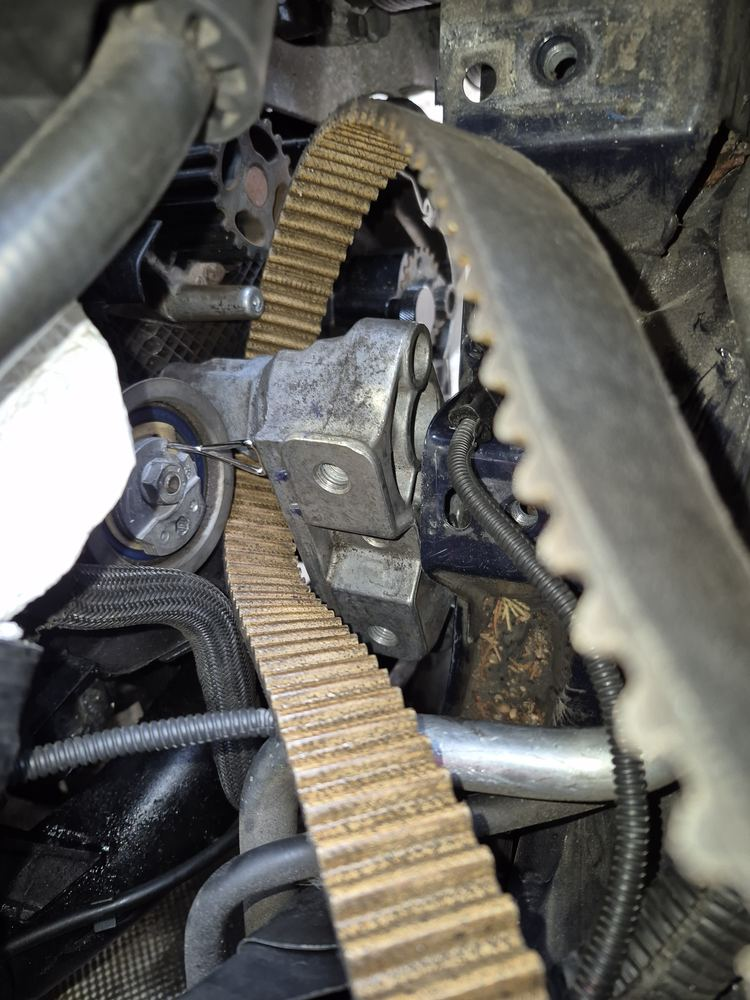
Dein Foto vom 22.11. Der lose Riemen hängt noch um den Motorhalter. Er muss flach durch den Spalt zwischen Halter und Motorblock.
Prüfen: Beide Arretierwerkzeuge sitzen noch.
So findest du es
Die Wasserpumpe erkennst du an ihrem kleinen Zahnrad rechts im Riementrieb, auf halber Höhe zwischen Nockenwellenrad und Kurbelwellenrad.
Achtung
Von jetzt an bis Schritt 22 weder Kurbelwelle noch Nockenwelle bewegen. Nicht an den Rädern abstützen, nichts dagegen hebeln.
Wenn es klemmt
Der Riemen geht nicht über den Bund der Wasserpumpe: Spannrolle ist nicht ganz entspannt. Schritt 16 prüfen.
Der Riemen geht nicht am Motorhalter vorbei: Den Halter weiter vom Block wegdrücken und den Motor mit der Spindel etwas heben oder senken. Geht es nicht: Foto an mich.
Schritt 18
Spannrolle und Umlenkrolle ausbauen
Bild 18a. Blick von der Seite. Erst die Mutter, dann die Rolle von der Stiftschraube ziehen.
Stiftschrauben: Es geht nur um die zwei, auf denen Rollen saßen. Auf einer saß die Spannrolle (Mutter SW 15), auf der anderen die Umlenkrolle (Mutter SW 13). Alle anderen Stifte und Bolzen am hinteren Zahnriemenschutz bleiben drin. Dein SKF-Satz VKMC 01250-1 enthält 2 neue Stiftschrauben, eine für jede Rolle. Die SKF-Einbauanleitung schreibt vor, beide zu tauschen. Probier vorher: Die alte Mutter muss sich auf die neue Stiftschraube drehen lassen, und die Länge muss passen. Herausdrehen: Hat das Ende einen Innensechskant oder Innentorx, setz dort an. Sonst zwei Muttern auf der Stiftschraube fest gegeneinander ziehen und an der inneren Mutter gegen den Uhrzeigersinn drehen. Nie mit der Zange am Gewinde greifen. Sitzt eine sehr fest: nicht erzwingen, sondern drin lassen und mir schreiben. Eine abgerissene Stiftschraube ist schlimmer als eine alte. In Video A bleiben die alten drin.
Müll
▶ A · 21:56–22:17 24 sDie Stehbolzen liegen dem Satz meist bei. Im Video bleiben die alten drin.
Die neue Stiftschraube von Hand eindrehen, mit demselben Ende wie die alte. Sie muss ganz bis zum Anschlag hineingehen. Eine nicht ganz eingedrehte Stiftschraube kann später brechen. Dann mit zwei gekonterten Muttern anziehen. Werte aus der SKF-Einbauanleitung NT 01019 für deinen Satz, am 22.11. nachgelesen: Stiftschraube der Spannrolle 15 Nm, Stiftschraube der Umlenkrolle 10 Nm. Danach die zwei Muttern wieder abnehmen.
Alle Auflageflächen mit Bremsenreiniger und Lappen säubern. Öl und Kühlmittel haben am Riementrieb nichts verloren.
So findest du es
Spannrolle: große glatte Rolle unter dem Nockenwellenrad, Teil 2.
Umlenkrolle: kleine glatte Rolle weiter unten auf derselben Seite, Teil 3.
ContiTech schreibt vor, die Stiftschraube und die Mutter der Spannrolle nie wiederzuverwenden. Gebrochene Stiftschrauben sind eine bekannte Ausfallursache.
Beutel 18Alte Spannrolle, Umlenkrolle, Mutter und Stiftschraube in den Müll. Nur die Schraube der Umlenkrolle aufheben, falls dem Satz keine neue beiliegt.
Foto-Kontrolle 8 · Hinter den Zahnrädern
Mach diese Fotos und schick sie mir, bevor du weiterbaust:
Bereich hinter dem Nockenwellenrad
Bereich hinter dem Kurbelwellenrad
Sitz der alten Spannrolle und der Umlenkrolle
Ich achte auf frisches Öl. Trockener, alter Schmutz ist unkritisch. Nasses Öl deutet auf einen undichten Wellendichtring, und der gehört getauscht, bevor der neue Riemen aufgelegt wird.
Schritt 19
Wasserpumpe wechseln
So findest du es
Der Kühler steht ganz vorn hinter dem Stoßfänger. An seiner Unterkante sitzt entweder eine Ablassschraube aus Kunststoff oder ein dicker Schlauch, der von einer Klammer gehalten wird.
Der Ölkühler ist ein flacher Metallblock am Ölfiltergehäuse an der Vorderseite des Motors. An ihm hängen zwei dünnere Kühlmittelschläuche.
Die Wasserpumpe sitzt im Riementrieb rechts, auf halber Höhe. Du erkennst sie an ihrem kleinen Zahnrad, in Übersicht F das Teil 4.
Bild 19b. Einbaulage der neuen Wasserpumpe, von vorn gesehen.
Den Deckel des Ausgleichsbehälters mit einem Lappen darüber langsam öffnen.
Kühlmittel ablassen. Folge dem dicken unteren Kühlerschlauch bis zum Kühler. Direkt neben seinem Anschluss sitzt unten am Kühler, auf der Seite zum Motor, die Ablassschraube. Das ist ein geriffelter Kunststoffknopf, etwa so groß wie ein Flaschendeckel. Gegen den Uhrzeigersinn aufdrehen. Das Kühlmittel läuft aus dem kleinen Stutzen daneben. Hat dein Kühler keine Ablassschraube: an derselben Stelle die Drahtklammer am unteren Kühlerschlauch herausziehen und den Schlauch vom Kühler abziehen. Zeichnungen dazu im VW-Leitfaden (englisch).
Zusätzlich den Kühlmittelschlauch am Ölkühler abziehen. Der Ölkühler sitzt unten am Ölfiltergehäuse, vorn am Motor. Die Federschelle mit einer Zange zusammendrücken, zurückschieben und den Schlauch abziehen. So läuft auch der Motor leer. Sitzt der Schlauch fest: erst mit der Hand oder einer Zange mit Lappen dazwischen auf dem Stutzen hin und her drehen, bis er sich löst. Dann drehen und ziehen. Nicht am Stutzen hebeln, er ist dünn. Geht er gar nicht ab: Schelle zurück an ihren Platz und dranlassen. Dann kommt der Rest später aus der Öffnung der Wasserpumpe.
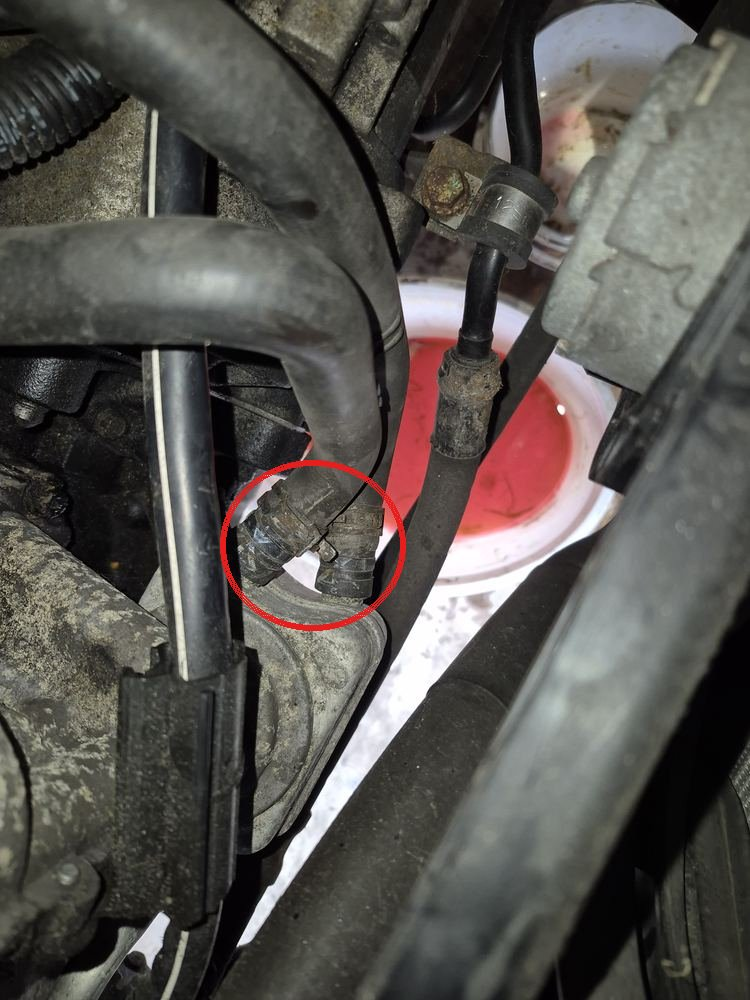
Dein Foto vom 22.11. Von unten gesehen: die zwei Kühlmittelschläuche am Ölkühler (roter Kreis). Der Ölkühler ist das silberne Teil darunter.
Kurbelwellenrad und Nockenwellenrad mit Lappen abdecken.
Die 3 Schrauben der Wasserpumpe herausdrehen. Eine sitzt etwa auf 12 Uhr, eine etwa auf 5 Uhr, die dritte ist schwer zu sehen. Es sind Sechskantschrauben, SW 10. Sie sitzen vertieft, nimm deshalb eine Nuss und keinen Maulschlüssel. Vorher den Dreck aus der Vertiefung kratzen, damit die Nuss ganz aufsitzt. Siehst du eine Schraube nicht: das Pumpenrad von Hand drehen und durch seine Fenster schauen.
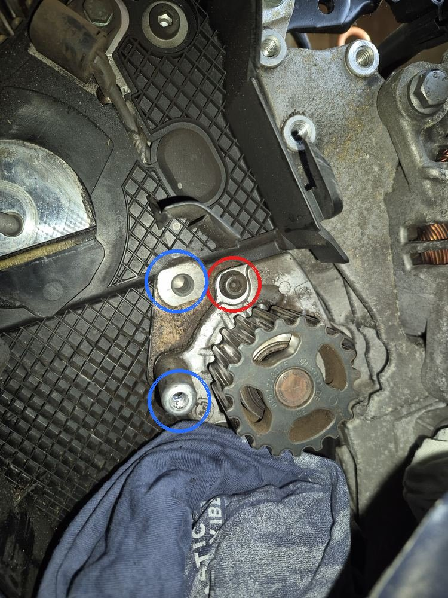
Dein Foto vom 22.11. Rot: eine der 3 Schrauben der Wasserpumpe, Sechskant SW 10, vertieft. Blau oben: Gewindeloch im Motorblock für den Motorhalter. Blau unten: langer Schraubdom, der zur Wasserpumpe gehört. An ihm wird später der Zahnriemenschutz angeschraubt. Hier fehlt keine Schraube.
Die Pumpe herausziehen: leicht hin und her drehen und dabei ziehen. Es läuft noch Kühlmittel nach. Sitzt die Pumpe fest: Sie lässt sich nur wenige Grad drehen, weil ihre Laschen am Block anstoßen. Dann nach vorn hebeln. Einen flachen Schraubendreher oder Meißel als Keil zwischen Pumpenflansch und Motorblock ansetzen und mit leichten Schlägen eintreiben, reihum an 2 bis 3 Stellen. Kriechöl an den Rand geben. Nicht am schwarzen Kunststoffschutz abstützen und nicht in die runde Bohrung im Block stechen. Die alte Pumpe darf dabei Schaden nehmen.
Müll
Die Sitzfläche im Block sauber wischen, bis kein Belag und kein Rost mehr zu sehen ist. Ein Lappen mit etwas Bremsenreiniger hilft. Wichtig ist die glatte Ringfläche innen in der Bohrung: Dort dichtet der neue Ring. Braune Krusten mit einem Schleifvlies oder Lappen von Hand abreiben, immer rundherum, nicht quer. Kein grobes Schleifpapier, keine Riefen. Stehendes Kühlmittel mit einem Lappen aufsaugen, bis der untere Rand der Bohrung frei ist. Die 3 kleinen Gewindelöcher mit einem gedrehten Papiertuch trocken tupfen: Steht Flüssigkeit darin, stimmt später das Drehmoment nicht.
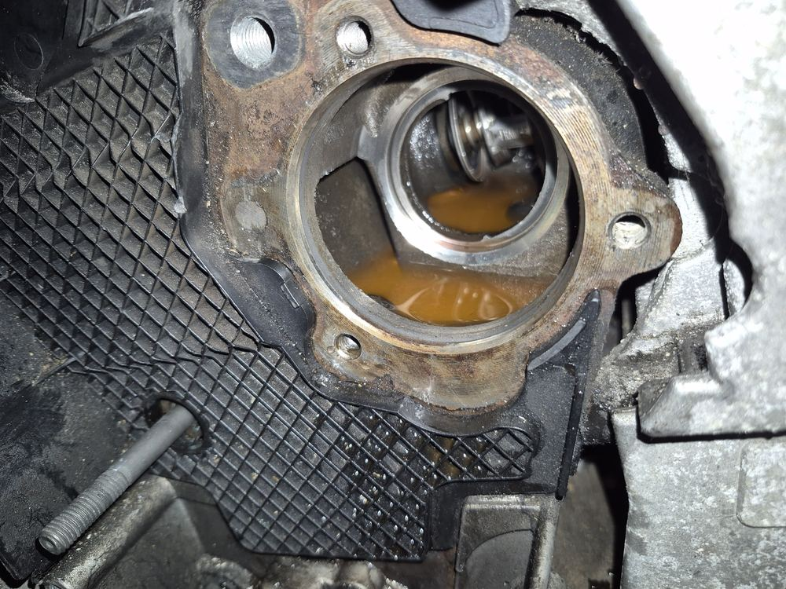
Dein Foto vom 22.11. Der Sitz der Wasserpumpe im Motorblock. Die glatte Ringfläche innen muss sauber sein, dort dichtet der neue Ring. Rundherum die 3 kleinen Gewindelöcher der Pumpe.
Die Schläuche wieder aufstecken, die Ablassschraube schließen. Alles trocken wischen.
Freiwillig: Dichtheitsprobe vor dem Riemen. Alle Kühlmittelschläuche müssen wieder dran sein, die Ablassschraube zu. Den Ausgleichsbehälter aufrecht auf seiner normalen Höhe festbinden. Riemenräder mit Lappen abdecken. Kühlmittel langsam bis zwischen „min“ und „max“ einfüllen. 20 bis 30 Minuten warten. Dann mit Lampe und trockenem Papiertuch rund um den Flansch der Wasserpumpe prüfen, vor allem unten. Bleibt das Tuch trocken, ist der Dichtring in Ordnung. Den Motor nicht starten. Die endgültige Prüfung bei warmem Motor kommt in Schritt 26.
Stößt die neue Pumpe am hinteren Zahnriemenschutz an, lässt das Handbuch zu, den Schutz an dieser Stelle nachzuarbeiten. Altes Kühlmittel gehört zur Schadstoffsammlung. Es ist giftig und schmeckt süß: Kinder und Haustiere fernhalten, Pfützen sofort aufwischen.
Werkzeug für diesen Schritt
Ratsche mit Nuss für die 3 Schrauben: In Video A ist es eine 10er. Nimm die, die ohne Spiel passt
Auffangwanne, mindestens 8 Liter
Lappen, Bremsenreiniger
Kleiner Drehmomentschlüssel für 15 Nm
Wenn es klemmt
Die alte Pumpe sitzt fest: Mit einem Kunststoffhammer seitlich leicht gegen das Gehäuse klopfen. Nie mit dem Schraubendreher zwischen Pumpe und Block hebeln, das beschädigt die Dichtfläche.
Die neue Pumpe geht nicht ganz hinein: Dichtring prüfen, er darf nicht verdreht oder herausgerutscht sein. Pumpe gerade ansetzen und mit den Schrauben gleichmäßig über Kreuz heranziehen.
Beutel 193 Schrauben der Wasserpumpe aufheben, falls dem Satz keine neuen beiliegen. Alte Pumpe in den Müll.
Foto-Kontrolle 9 · Kühlmittel und alte Wasserpumpe
Mach diese Fotos und schick sie mir, bevor du weiterbaust:
Abgelassenes Kühlmittel in der Wanne
Alte Wasserpumpe von der Flügelradseite
Sitz der Pumpe im Motorblock
Ich achte auf braunes, rostiges oder öliges Kühlmittel und auf ein lockeres oder beschädigtes Flügelrad.
Thema G · Schritte 20 bis 23
Neuen Riemen auflegen, spannen und prüfen
Der Motor ist kalt, beide Arretierwerkzeuge sitzen. Halte dich genau an die Reihenfolge beim Auflegen und an die Drehrichtungen.
Schritt 20
Neue Spannrolle aufsetzen
Bild 20. Sitz der Spannrolle. Die Nase muss in der Aussparung liegen.
So gehst du vor
Die neue Spannrolle auf die Stiftschraube setzen.
▶ A · 30:17–30:53 39 sDie Nase der Spannrolle muss in die Kerbe im hinteren Zahnriemenschutz.
Die Nase der Grundplatte muss in der Aussparung des hinteren Zahnriemenschutzes liegen (Bild 20). Die Rolle liegt flach am Motor.
Prüfen: Der Absteckstift T10115 steckt und die Rolle ist im Uhrzeigersinn bis zum Anschlag gedreht.
▶ A · 29:44–30:22 41 sTrick: Neue Spannrolle zurückdrehen, bis das Loch frei ist, mitgelieferten Stift einschieben.
Die neue Mutter handfest aufdrehen.
Wenn es klemmt
Die Nase der Grundplatte findet die Aussparung nicht: Rolle wieder etwas abziehen, drehen, bis die Nase in der Aussparung liegt, dann ganz aufschieben. Sie muss flach am Motor anliegen.
Schritt 21
Neuen Zahnriemen auflegen, Umlenkrolle anschrauben
Trägt der neue Riemen Laufrichtungspfeile, zeigen sie in Drehrichtung des Motors, also im Uhrzeigersinn. Den Riemen nicht knicken und nicht mit Werkzeug auf die Räder hebeln.
So gehst du vor
Das Nockenwellenrad in seinen Langlöchern gegen den Uhrzeigersinn bis zum Anschlag drehen. So steht es im VW-Handbuch für deinen Motor.
Prüfen: Die 3 Schrauben stehen jeweils am Ende ihres Langlochs, das im Uhrzeigersinn liegt. Sie bleiben lose, die Nabe bleibt mit dem Stift 3359 arretiert.
Den Riemen so halten, dass du die Beschriftung lesen kannst. Wenn Pfeile drauf sind, zeigen sie im Uhrzeigersinn.
Riemen hinter den Motorhalter. Der Riemen läuft zwischen Motorhalter und Motorblock. Ist der Halter noch im Motorraum: lose lassen, vom Block wegdrücken und den neuen Riemen dahinter durchfädeln. Danach den Halter an den Block setzen und eine obere Schraube 3 bis 4 Gänge von Hand eindrehen. Festgezogen wird er erst in Schritt 24. Hast du den Halter ganz herausbekommen, kommt er erst in 24.7 wieder dran.
aus Beutel 13
Dein Foto vom 20.11. So saß es vor dem Ausbau: Der Riemen läuft zwischen Motorhalter und Motorblock durch.
Den Riemen unten um das Kurbelwellenrad legen.
▶ A · 31:57–32:48 54 sReihenfolge: Kurbelwellenrad, Umlenkrolle, Spannrolle, Nockenwellenrad.
Den Riemen auf der Seite von Umlenkrolle und Spannrolle nach oben führen. Die Umlenkrolle ist noch nicht dran, sie kommt in 21.9a. Der Riemen läuft dort an ihrer Stiftschraube vorbei. Seine glatte Rückseite liegt später an beiden Rollen an, wie beim alten Riemen auf deinem Foto aus Schritt 14.
Dein Foto vom 22.11. So lief der alte Riemen unten: um das Kurbelwellenrad, rechts hinauf zum Rad der Wasserpumpe.
Den Riemen oben über das Nockenwellenrad legen.
Zuletzt den Riemen auf das Rad der Wasserpumpe schieben.
Jetzt die Umlenkrolle anschrauben. Die neue Umlenkrolle auf ihre Stiftschraube setzen. Die glatte Riemenrückseite liegt an der Rolle an. Die neue Mutter aufdrehen und mit 20 Nm anziehen. Der Wert und die Reihenfolge stehen so in der SKF-Einbauanleitung für deinen Satz: Spannrolle, Riemen, dann Umlenkrolle. Im Video A kommt die Umlenkrolle schon vor dem Riemen dran, der Handgriff ist derselbe.
aus Beutel 18 nur, falls keine neue Schraube dabei
Geprüft am 22.11.: Der VW-Leitfaden für den Golf 4 mit deinem Motor (AXR) sagt: gegen den Uhrzeigersinn bis zum Anschlag. Video A dreht bei 30:48 „nach rechts“, die SKF-Anleitung nennt die Mitte der Langlöcher. Halte dich an den Leitfaden und diese Anleitung. Die Startlage ist nicht kritisch: Die Steuerzeit halten die zwei Arretierwerkzeuge, und in Schritt 23 wird alles nachgeprüft.
Aus Erfahrungsberichten
Nicht nach dem alten Riemen ausrichten. Lege den alten Riemen nicht daneben, um Zähne abzuzählen oder Markierungen zu übertragen. Der alte Riemen ist gelängt. Die Steuerzeit stimmt allein durch die beiden Arretierwerkzeuge und das Nockenwellenrad in den Langlöchern.
Der neue Riemen sitzt sehr stramm. Das berichten viele. Geht er nicht auf die Wasserpumpe, prüfe: Steckt T10115 und ist die Spannrolle bis zum Anschlag entspannt? Steht das Nockenwellenrad gegen den Uhrzeigersinn am Anschlag? Dann den Riemen von Hand über das Pumpenrad schieben. Nie mit einem Schraubendreher hebeln.
Schritt 22
Zahnriemen spannen, Nockenwellenrad festziehen
Bild 22. Der Zeiger steht mittig in der Lücke der Grundplatte.
So gehst du vor
Die Mutter der Spannrolle lösen.
Die Rolle mit dem Spannrollenschlüssel ein wenig gegen den Uhrzeigersinn entlasten.
▶ A · 33:42–34:24 45 sStift aus der Spannrolle ziehen, Inbus ansetzen und spannen, bis der Zeiger in der Lücke steht.
Den Absteckstift T10115 herausziehen.
Die Rolle vorsichtig im Uhrzeigersinn drehen, also in Pfeilrichtung, bis der Zeiger mittig in der Lücke der Grundplatte steht (Bild 22).
Wurde der Exzenter zu weit gedreht, die Rolle ganz entspannen und von vorn beginnen. Nie aus der zu strammen Stellung zurückkorrigieren.
Werkzeug für diesen Schritt
Spannrollenschlüssel BGS 8150 oder Inbus 6 mm
Kleiner Drehmomentschlüssel mit Nuss SW 15 und Ringschlüssel-Nuss SW 13
Lackstift für den 45°-Strich
45° richtig weiterdrehen
45° ist eine Achtelumdrehung. Nach den 20 Nm einen Strich über Mutter und Rolle machen. Dann die Mutter weiterdrehen, bis der Strich auf der Mutter um eine Ecke und eine halbe Ecke weiter steht: Eine Sechskantmutter hat 6 Ecken, eine Ecke sind 60°.
Die Spannrolle ansehen: Der Zeiger steht mittig in der Lücke wie in Bild 22.
Kontrolle
Wenn der Stift 3359 nicht passt
Zapfen des Kurbelwellenstopps aus dem Dichtflansch ziehen. Kurbelwelle drehen, bis sich die Nabe mit 3359 abstecken lässt.
Die 3 Schrauben des Nockenwellenrads lösen.
Kurbelwelle ein kleines Stück gegen die Drehrichtung drehen, bis der Zapfen kurz vor der Bohrung im Dichtflansch steht.
Kurbelwelle im Uhrzeigersinn drehen, bis der Zapfen aus der Drehbewegung einrastet.
Die 3 Schrauben des Nockenwellenrads mit 25 Nm anziehen.
Werkzeuge herausnehmen und die Kontrolle mit zwei Umdrehungen wiederholen.
Wenn die Spannung nicht stimmt
Rolle mit dem Spannrollenschlüssel gegenhalten, Mutter lösen, Einstellung aus Schritt 22 wiederholen und die Mutter wieder mit 20 Nm + 45° anziehen. Danach erneut zwei Umdrehungen drehen und prüfen.
Thema H · Schritte 24 bis 26
Zusammenbau
Die Reihenfolge ist wichtig: Der Motorhalter muss fest am Block sitzen, bevor das Motorlager montiert wird.
Schritt 24
Zahnriemenschutz, Schwingungsdämpfer und Motorhalter montieren
Den unteren Zahnriemenschutz anschrauben, 10 Nm. Schrauben aus Beutel 14.
Neuen Schwingungsdämpfer nehmen. Am alten ist seit dem 22.11. ein Schraubenauge ausgebrochen und vermutlich gerissen, er wird nicht wieder eingebaut. Passend laut Febi-Katalog für Golf 4 Variant 1.9 TDI 74 kW: Febi 30214 (VW-Nummer 038 105 243 K, Außendurchmesser 143 mm). Vor dem Einbau alt und neu nebeneinander legen: gleicher Durchmesser, gleiche Rillen, gleiche 4 Löcher. Den Schwingungsdämpfer mit den 4 neuen Schrauben aufsetzen. Er passt nur in einer Stellung (Bild 24b).
Unteres Luftrohr wieder anbauen. Die Lappen aus beiden Öffnungen nehmen. Das Rohr in die Kupplung am Ladeluftkühler stecken und den Drahtbügel hineindrücken, bis er einrastet. Kurz am Rohr ziehen, es muss halten. Dann die Lasche am anderen Ende auf den Bolzen an der Karosserie stecken und die eine Mutter handfest anziehen.
aus Beutel 14
Dein Foto vom 20.11. Hier gehört die Lasche des Luftrohrs hin: an die Karosserie, oberhalb des Schwingungsdämpfers.
An der Zentralschraube gegenhalten wie in Schritt 14.
Die 4 Schrauben über Kreuz mit 10 Nm anziehen.
Auf jeden Schraubenkopf einen Strich machen, dann jede Schraube 90° weiter, eine Viertelumdrehung.
Den mittleren Zahnriemenschutz anschrauben, 10 Nm. Schrauben aus Beutel 14. Sitzt der Motorhalter schon lose am Block: seine Schraube noch einmal herausdrehen und den Halter zur Seite drücken, wie beim Ausbau.
aus Beutel 14
Den Motorhalter an den Motorblock setzen. Alle 3 Schrauben aus Beutel 13 von Hand ansetzen.
aus Beutel 13
Den Motor wie in Schritt 13 leicht anheben und die oberen Schrauben eindrehen, dann absenken und die untere eindrehen.
aus Beutel 13
▶ A · 10:13–11:45 95 sRückwärts gedacht: Für die oberen Schrauben des Motorhalters den Motor wieder leicht anheben.
Alle 3 Schrauben mit 45 Nm anziehen.
Den oberen Zahnriemenschutz aufsetzen und die Klammern schließen.
90° ist eine Viertelumdrehung. Mache vor dem Nachziehen mit dem Lackstift einen Strich auf Schraubenkopf und Bauteil, dann siehst du den Winkel.
Neue Schrauben für den Schwingungsdämpfer verwenden. Beim Anziehen wieder an der Zentralschraube gegenhalten wie in Schritt 14.
Schritt 25
Motorlager einbauen und ausrichten
So findest du es
Das Motorlager kommt von oben wieder an seinen Platz auf der Beifahrerseite, zwischen Kotflügel und Motorhalter. Lege die zwei neuen Schrauben für die Karosserie vorher bereit.
Bild 25b. Ausrichtung von oben, schematisch. Die Köpfe der Schrauben 3 liegen bündig an der Kante c.
Das Motorlager von oben einsetzen.
Die 2 neuen Schrauben zur Karosserie (Bild 25a, Nummer 1) eindrehen. Nimm die neuen, die genauso groß sind wie die alten von dieser Stelle. Erst von Hand eindrehen, sie müssen leicht greifen.
neue Schrauben
Dein Foto vom 20.11. Oben die alten, unten die neuen Schrauben fürs Motorlager: 2 lange, 2 mittlere, 2 kurze. Jede neue kommt an den Platz der gleich großen alten.
Mit 40 Nm anziehen, dann 90° weiter.
Das Motorlager zum Motorhalter ausrichten: Abstand a = 14 mm, Abstand b mindestens 10 mm, Schraubenköpfe bündig mit Kante c (Bild 25b).
Prüfen: Deine Striche aus Schritt 7 passen wieder genau zusammen.
Dein Foto vom 13.11. Das Motorlager mit deinen Strichen. Gelb: Schrauben, grün: Striche über die Fugen. So muss es wieder sitzen.
Den Motor mit der Spindel so anheben oder absenken, dass die Auflageflächen von Motorlager und Motorhalter aufeinanderliegen.
Die 2 Schrauben zum Motorhalter (Nummer 3) mit 100 Nm anziehen. Nimm die 2 neuen in derselben Größe wie die alten von dieser Stelle.
neue Schrauben
Den Halter an der Karosserie (Nummer 2) mit 25 Nm anziehen. Nimm die 2 neuen kurzen Schrauben. Sie haben keine Spitze, das ist in Ordnung. Danach kommen die 6 alten aus Beutel 12 in den Müll.
neue Schrauben
Die Spindel in kleinen Schritten zurückdrehen und dabei auf das Lager schauen. Es darf sich nicht verschieben.
Den Haken aushängen und die Brücke abnehmen.
Scheinwerfer, Teil 2
Der Zahnriemen ist fertig und das Motorlager sitzt. Jetzt kommen der neue Scheinwerfer und der Stoßfänger wieder dran. Danach geht es mit Schritt 26 weiter. Tipp: Solange der Scheinwerfer noch draußen ist, geht das Ladeluftrohr leichter hinein. Du kannst also 26.1 auch zuerst machen.
Schritt S3
Neuen Scheinwerfer einbauen und testen
Werkzeug für diesen Schritt
Torx T25
Beutel S2
Ein Helfer im Auto für den Lichttest
Den Stecker hinten am neuen Scheinwerfer aufstecken, bis er hörbar einrastet.
Den Regler für die Leuchtweite am Armaturenbrett durchdrehen. Der Lichtkegel an der Wand muss sich hoch und runter bewegen. Danach den Regler auf 0.
Grob einstellen: Vor einer Wand nach Augenmaß so einstellen, dass der neue so hoch leuchtet wie der andere. Die Einstellschrauben sitzen oben am Gehäuse.
Zündung aus.
Richtig einstellen erst nach dem Federwechsel
Die gebrochene Feder vorn rechts verändert die Höhe des Autos. Deshalb erst nach dem Federwechsel die Scheinwerfer in einer Werkstatt mit einem Einstellgerät einstellen lassen. Das Handbuch verlangt das ausdrücklich, besonders wenn ein Stellmotor getauscht wurde. Es kostet meist wenig.
Wenn es klemmt
Ein Licht geht nicht: Erst prüfen, ob die Birne richtig in der Fassung sitzt und ob der Stecker ganz eingerastet ist. Dann die Birne mit der vom alten Scheinwerfer tauschen.
Die Leuchtweite bewegt sich nicht: Den Kugelkopf des Stellmotors prüfen. Er muss in der Aufnahme am Reflektor sitzen.
Schritt S4
Stoßfänger anbauen
Werkzeug für diesen Schritt
Torx T25 und eventuell T20
Beutel S1
Ein Helfer
Mit dem Helfer den Stoßfänger vorn vor das Auto halten. Noch nicht aufschieben.
Waschdüsen: Beim Aufschieben gleich müssen beide Düsen hinter ihren Löchern im Stoßfänger stehen. Die Kappen kommen erst drauf, wenn der Stoßfänger sitzt: die Düse durch das Loch nach vorn ziehen, die Kappe aufdrücken, bis sie einrastet, und zurückgleiten lassen. Die Kappe muss danach bündig im Stoßfänger sitzen.
aus dem Karton
Dein Foto vom 20.11. So sah der Schlauch vor dem Ausbau aus: schwarzer geriffelter Schlauch im grauen Steckstück.Dein Foto vom 20.11. Die Waschdüse von unten: der schwarze Zylinder steckt oben im Stoßfänger und unten in einem grauen Halter.
Temperaturfühler: den Stecker aufstecken oder den Fühler wieder in den Stoßfänger clipsen.
Stoßfänger aufschieben, gerade nach hinten. Links und rechts die Ecken in die Führungen am Kotflügel drücken, bis sie bündig sitzen.
3 Schrauben oben eindrehen, T25.
aus Beutel S1
2 Schrauben ganz außen eindrehen: je eine oben links und oben rechts, direkt neben dem Scheinwerfer, durch die Lasche des Stoßfängers. Die hattest du beim Ausbau zusätzlich gefunden.
aus Beutel S1
Dein Foto vom 20.11. Hier gehört die äußere Schraube hin: durch die Lasche des Stoßfängers oben neben dem Scheinwerfer. Auf der anderen Seite genauso.
Schrauben hinter den Gittern eindrehen, eine je Seite. Hattest du unten welche: die auch.
aus Beutel S1
Alle anziehen, 6,6 Nm laut Handbuch. Handfest reicht, sie sitzen im Kunststoff.
Spalte prüfen: Der Stoßfänger sitzt zu Kotflügeln und Scheinwerfern gleichmäßig.
Dein Foto vom 13.11. So saß der Stoßfänger vorher. Danach soll es genauso aussehen.
Links die Schrauben zwischen Radhausschale und Stoßfänger eindrehen, 1,5 Nm, also nur leicht. Rechts machst du das in 26.4 zusammen mit der Radhausschale.
aus Beutel S1
Lüftungsgitter einclipsen: unten die Nasen einhängen, oben andrücken, bis der Clip einrastet.
Grill einsetzen: Hast du den Haubenhebel ausgefädelt, zuerst wieder durch den Schlitz stecken. Den Grill unten in den Stoßfänger stecken und oben andrücken, bis alle Rastnasen einrasten.
Haube testen: Die Haube nur leicht auflegen, nicht zuschlagen. Innen am Hebel ziehen, dann vorn den Entriegelungshebel betätigen. Die Haube muss aufgehen.
Erst dann die Haube richtig schließen.
Wenn es klemmt
Der Stoßfänger steht seitlich ab: Die Ecke sitzt nicht in der Führung am Kotflügel. Den Rand dort andrücken, bis er bündig sitzt.
Die Haube geht nicht auf: Der Entriegelungshebel klemmt im Grill. Bei leicht aufgelegter Haube kommst du noch heran.
Beutel S1 und S2Jetzt leer, nur die Radhaus-Schrauben rechts bleiben für 26.4.
Schritt 26
Anbauteile montieren, Kühlmittel auffüllen
26.1 Behälter, Leitungen und Ladeluftrohr
Den Kühlmittel-Ausgleichsbehälter an seinen Platz setzen und anschrauben.
aus Beutel 4
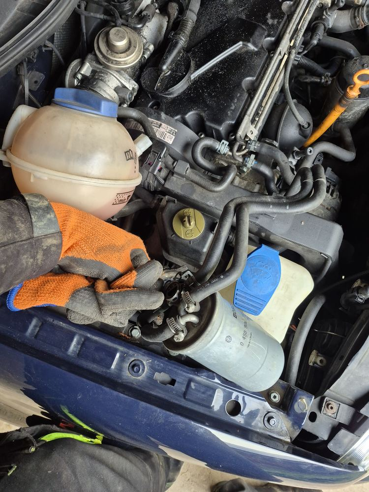
Dein Foto vom 13.11. So saßen Ausgleichsbehälter, Kraftstofffilter und Servoöl-Behälter vorher.
Den Stecker an der Unterseite des Ausgleichsbehälters aufstecken, bis er einrastet.
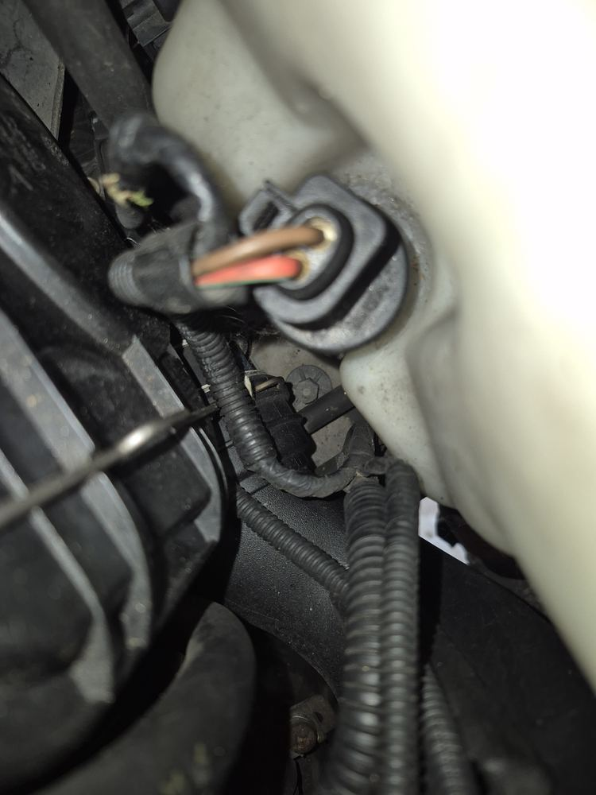
Dein Foto vom 15.11. Der Stecker an der Unterseite des Ausgleichsbehälters.
Den Servoöl-Behälter anschrauben.
aus Beutel 4
Den Kraftstofffilter anschrauben.
aus Beutel 4
Spannschraube der Filterschelle einsetzen. Am 22.11. ist die Spannschraube aus der Blechschelle des Kraftstofffilters herausgefallen. Sie hat zwei schwarze Querstücke. Die Schelle hat zwei Enden mit je zwei Haken. Häng das Querstück am Schraubenkopf in das eine Hakenpaar und das Querstück mit dem Gewinde in das andere. Dann die Schraube anziehen, bis der Filter fest sitzt und sich von Hand nicht mehr drehen lässt. Nur handfest, die Schelle ist dünnes Blech.
aus Beutel 4
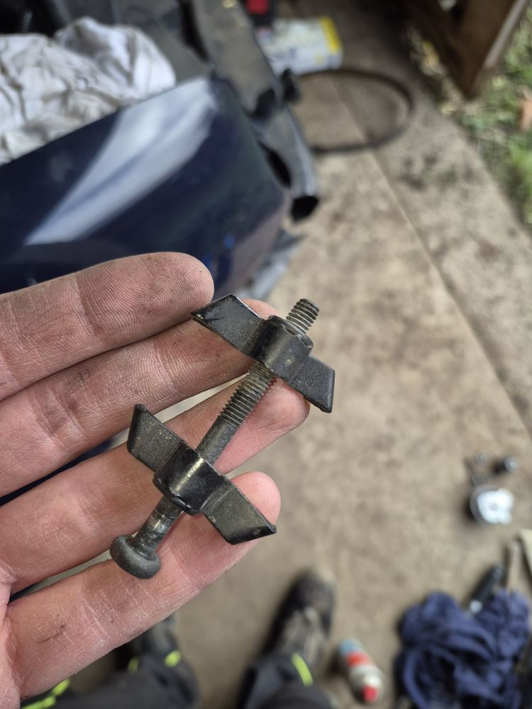
Dein Foto vom 22.11. Die Spannschraube der Filterschelle mit ihren zwei Querstücken.
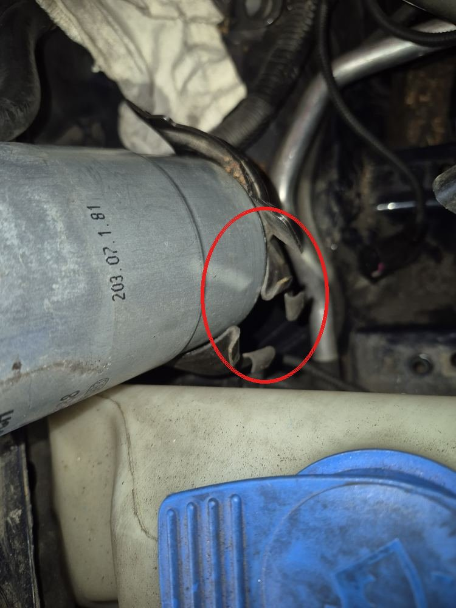
Dein Foto vom 22.11. Hier gehört sie hin: zwischen die zwei Hakenpaare an den Enden der Schelle (roter Kreis).
Die Kraftstoffleitung wieder in ihre Halterung am Zylinderkopfdeckel legen.
Die Lappen aus den Stutzen des Ladeluftrohrs nehmen.
Ladeluftrohr oben aufstecken. Die blauen Striche auf Schlauch und Rohr wieder aufeinander ausrichten. Hörbar einrasten lassen oder die Schelle festziehen.
aus Beutel 6
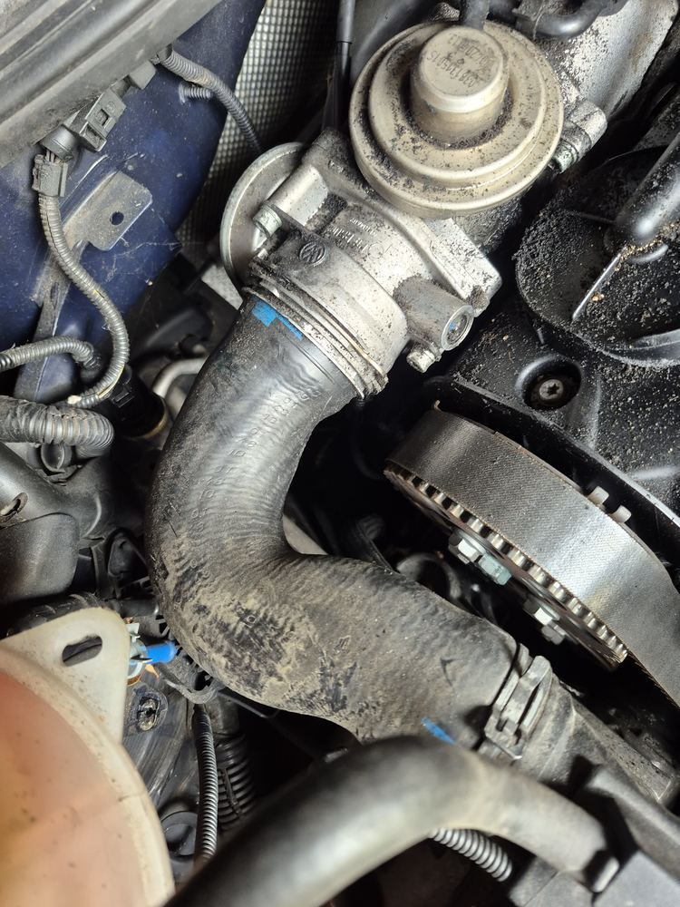
Dein Foto vom 13.11. Das obere Ende mit den blauen Strichen.
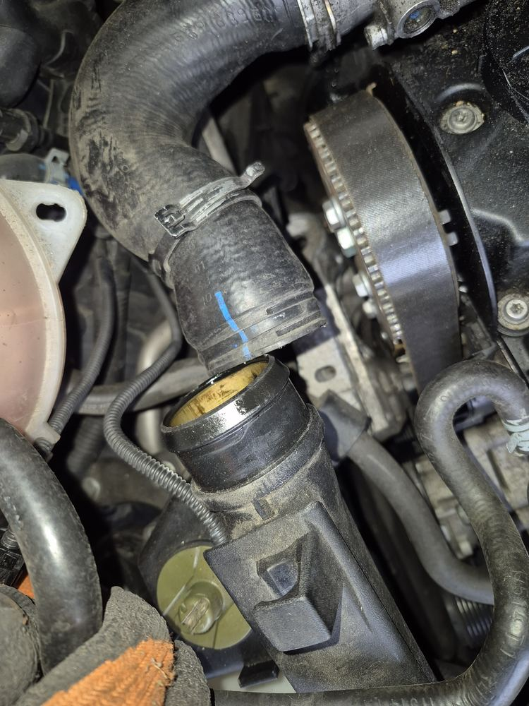
Dein Foto vom 13.11. Der obere Anschluss, abgezogen.
Ladeluftrohr unten aufstecken. Hörbar einrasten lassen oder die Schelle festziehen.
aus Beutel 6
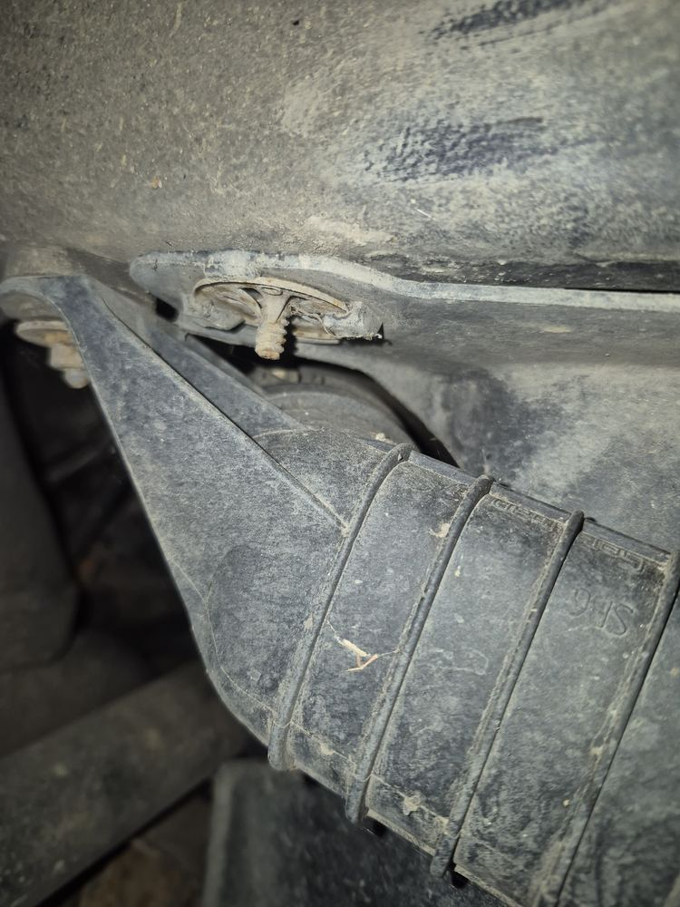
Dein Foto vom 15.11. Das untere Ende, von unten gesehen.
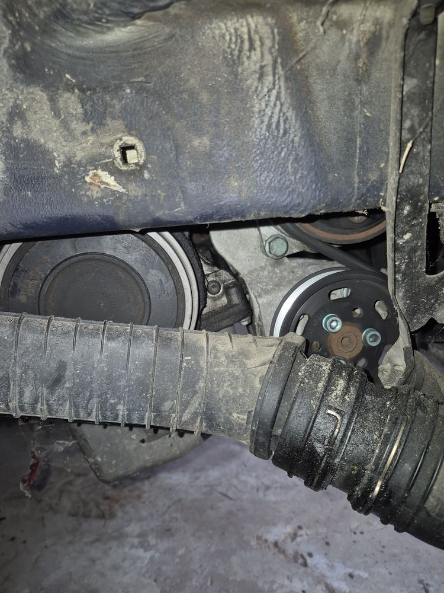
Dein Foto vom 15.11. Das untere Ende von der Seite.
Zug-Probe: An beiden Enden kräftig ziehen. Nichts darf abgehen.
26.2 Keilrippenriemen einbauen
Das Spannelement des Keilrippenriemens wieder anschrauben, Schrauben aus Beutel 14, 25 Nm. Der L-Stift (BGS Teil 5) steckt noch.
Dein Foto vom 15.11. So steckte der Stift im Spannelement.
Riemenscheibe der Servopumpe wieder anschrauben. Du hattest sie am 20.11. abgenommen. Die Scheibe auf die Nabe mit den 3 Gewindelöchern setzen, die Seite mit der Beschriftung zeigt nach außen wie auf deinem Foto. Die 3 Innensechskantschrauben von Hand eindrehen, nur handfest. Fest angezogen werden sie in 26.2g, wenn der Riemen gespannt ist und die Scheibe hält.
aus Beutel Servopumpe
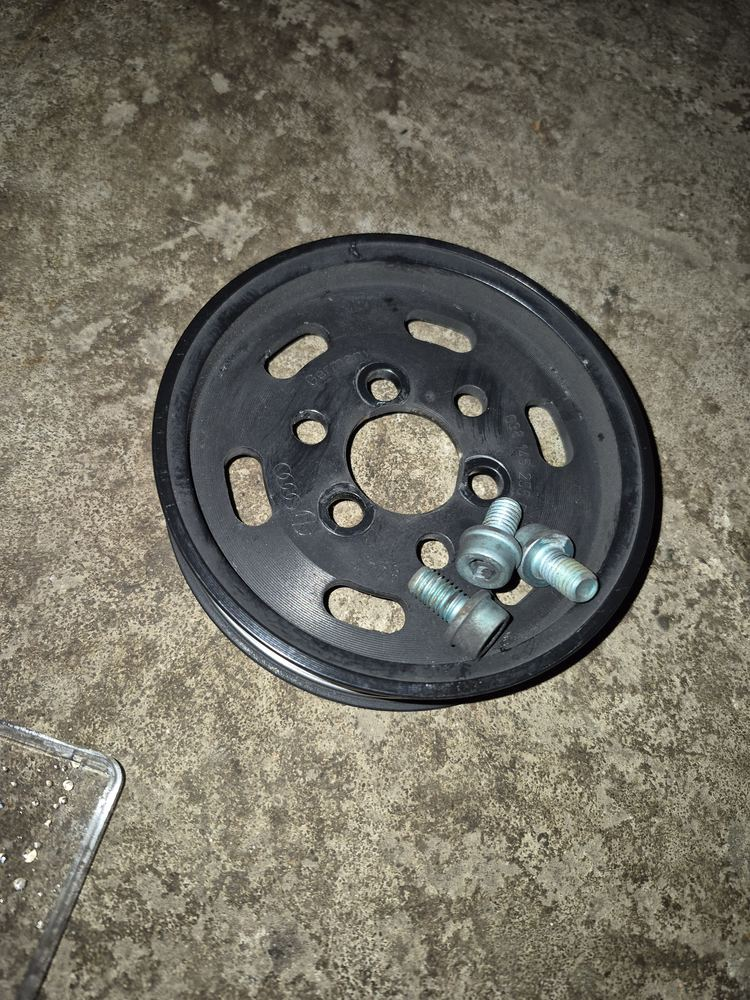
Dein Foto vom 20.11. Die Riemenscheibe der Servopumpe mit ihren 3 Schrauben. Diese Seite zeigte nach außen.
Länge vergleichen: den neuen Keilrippenriemen neben den alten legen. Er hat 6 Rippen wie der alte und darf höchstens 1 bis 2 cm kürzer sein.
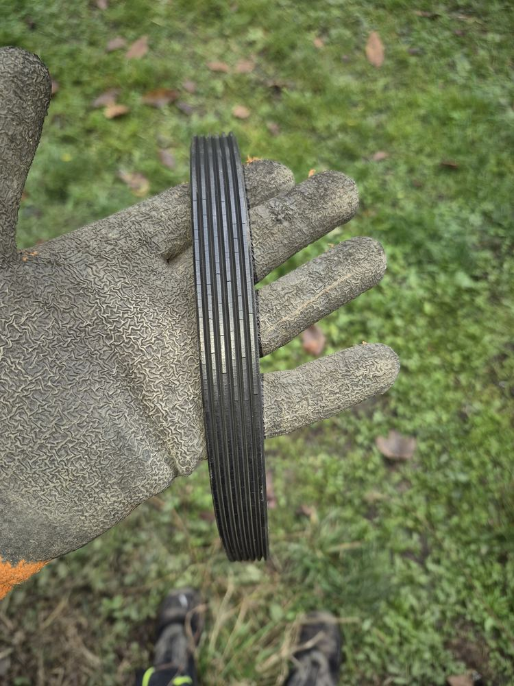
Dein Foto vom 15.11. Dein alter Riemen mit 6 Rippen.
Den neuen Riemen nach deinen Fotos auflegen.
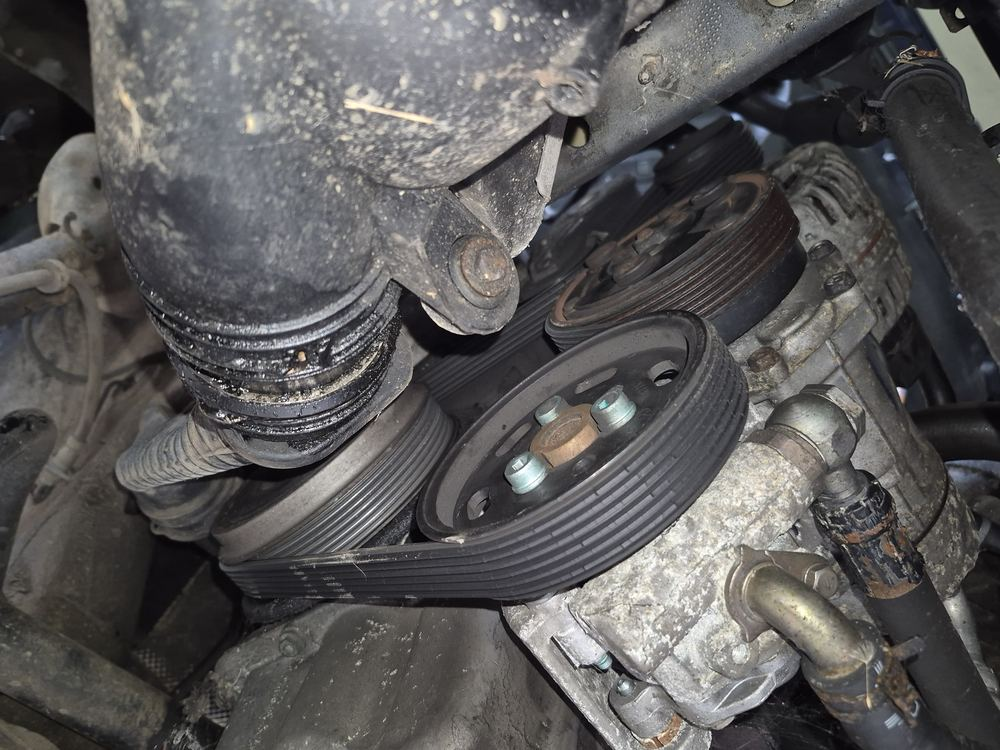
Dein Foto vom 15.11. So lief der alte Riemen unten über die Riemenscheiben.
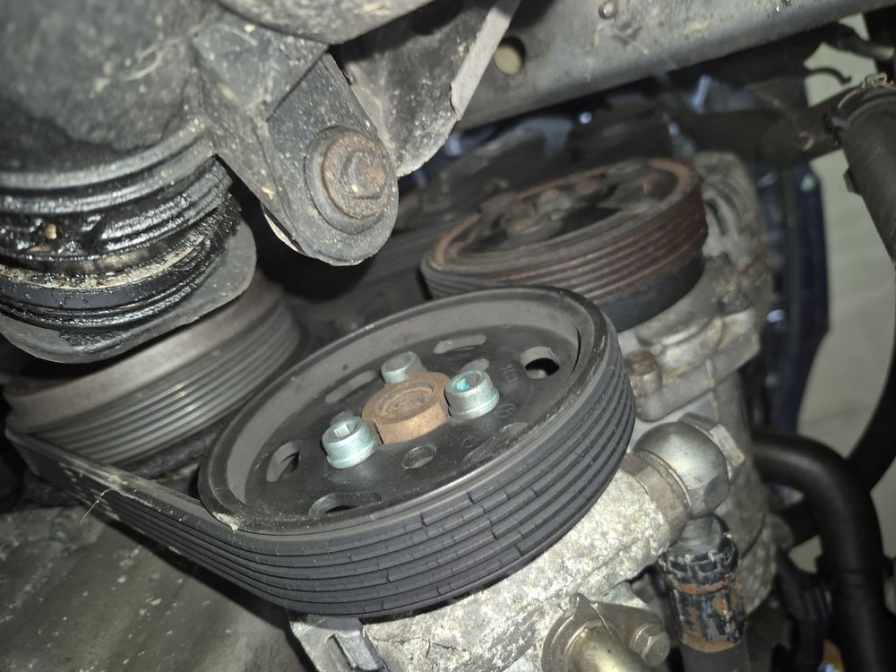
Dein Foto vom 15.11. Derselbe Bereich etwas näher.
Zuletzt kommt der Riemen auf die Scheibe des Klimakompressors (Teil 10).
Den Maulschlüssel wieder an die Flachstellen des Spannelements setzen und leicht weiter schwenken.
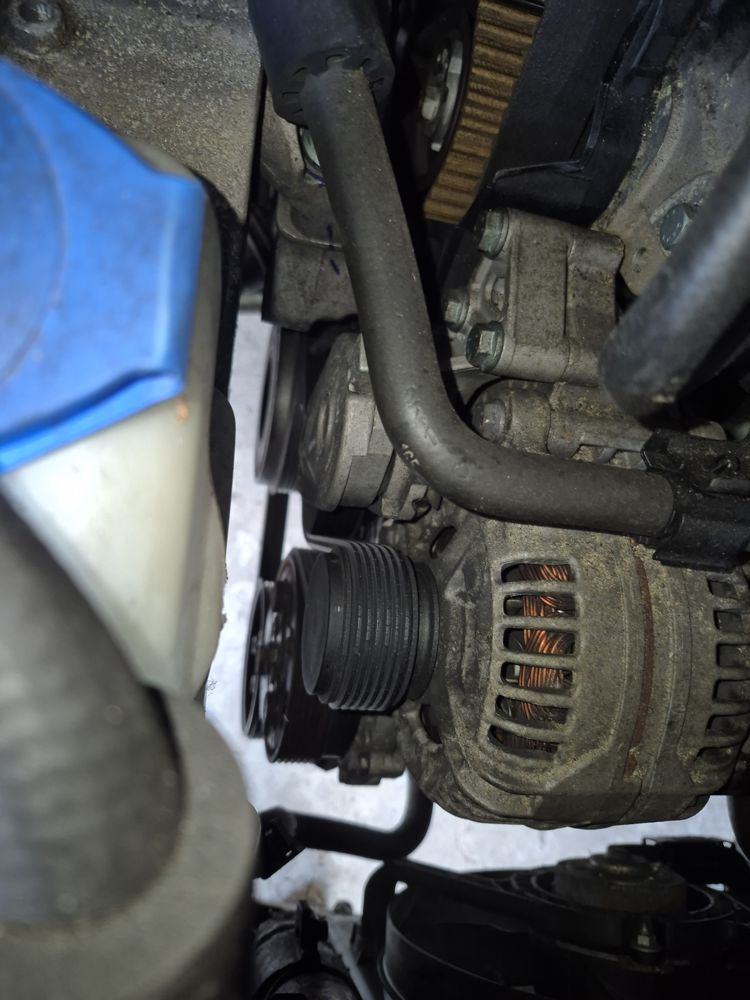
Dein Foto vom 15.11. Spannelement und Lichtmaschine von oben.
Den L-Stift ziehen und den Schlüssel langsam zurückgehen lassen.
Prüfen: Der Riemen liegt in allen Scheiben voll in den Rillen. Dann die 3 Schrauben der Servopumpen-Scheibe über Kreuz festziehen, 25 Nm als Richtwert. Nicht fester, die Scheibe ist aus Kunststoff.
Bild 26c. Füllstand im Ausgleichsbehälter. Manche Behälter haben statt zwei Strichen ein schraffiertes Feld.
26.3 Kühlmittel auffüllen
Das bestellte Kühlmittel ist fertig gemischt. Nicht verdünnen.
Kühlmittel auffüllen. Der Ausgleichsbehälter sitzt angeschraubt an seinem Platz. Langsam einfüllen, bis der Stand an der oberen Kante des schraffierten Feldes steht. Du hast am 22.11. für die Dichtheitsprobe (19.12a) schon eingefüllt: Dann nur den Stand prüfen und auffüllen. Im Kanister war danach noch etwa ein Drittel. Den Rest nicht ganz verbrauchen, du brauchst ihn in Schritt 27.
Warten, bis der Stand nicht mehr absinkt. Nachfüllen bis zur oberen Markierung.
Den Deckel aufschrauben.
26.4 Batterie und Verkleidungen
Den Minuspol der Batterie aufstecken und festziehen (Bild 2). Hast du das schon in S3 gemacht, nur prüfen, ob er fest sitzt.
Die rechte Radhausschale einsetzen und verschrauben.
aus Beutel 9b
Die Schrauben zwischen Radhausschale und Stoßfänger eindrehen, 1,5 Nm, also nur leicht.
aus Beutel S1
Die Geräuschdämpfung von unten ansetzen und alle Schrauben eindrehen.
aus Beutel 9a
Die Motorabdeckung aufsetzen.
aus Beutel 3
Vergleich mit deinem Foto von vorher: Ist alles wieder dran, stecken alle Stecker?
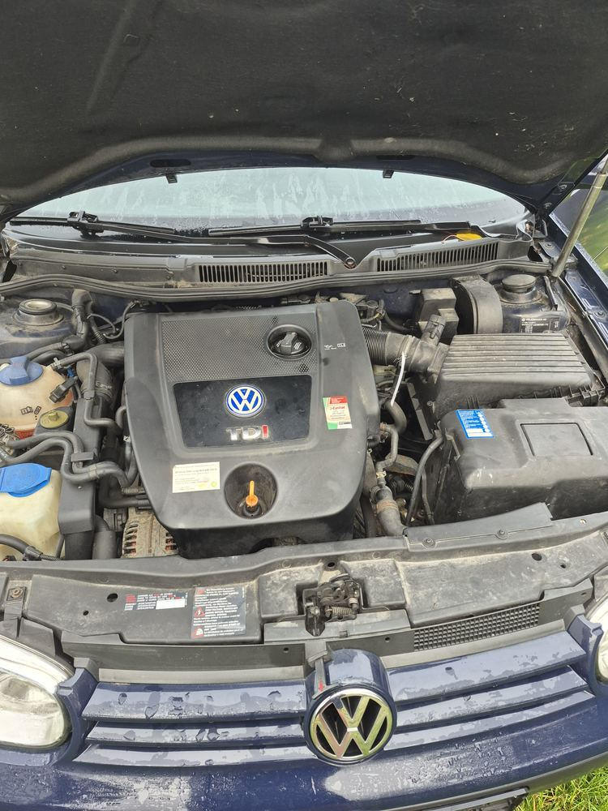
Dein Foto vom 13.11. Dein Motorraum vor der Arbeit.
Bild 26e. Reihenfolge beim Anziehen der fünf Radschrauben.
26.5 Rad montieren
Machst du den Federwechsel vorn rechts direkt danach, bleibt das Auto auf den Böcken: dann 26.5 erst nach dem Federwechsel.
Das Rad aufsetzen, alle fünf Radschrauben von Hand eindrehen und leicht anziehen.
Das Auto anheben, die Unterstellböcke entfernen, das Auto ablassen.
Die Radschrauben in der Reihenfolge aus Bild 26e mit 120 Nm anziehen.
Die Keile entfernen.
Thema I · Schritt 27
Probelauf und Schlusskontrolle
Schritt 27
Motor starten und prüfen
Mit Diagnosegerät
Wer ein Diagnosegerät wie VCDS hat, kann zusätzlich den Synchronisationswinkel zwischen Kurbelwelle und Nockenwelle auslesen. Liegt er außerhalb des zulässigen Bereichs, wird am Nockenwellenrad in den Langlöchern korrigiert.
Risikobewertung
Ein Zahnriemenwechsel am Pumpe-Düse-Diesel ist für Anfänger eine der schwierigeren Arbeiten. Die folgenden Zahlen sind meine Einschätzung, keine Statistik.
Zeit: Geübte Schrauber nennen in Foren etwa 3 Stunden. Als Anfänger ohne Hebebühne plane ab Schritt 8 einen ganzen Tag ein und einen Reservetag. Die meiste Zeit kosten Motorlager, Motorhalter und das Nachprüfen.
Ausgang
Schätzung
Was das heißt
Du wirst fertig und der Motor läuft
etwa 2 von 3
wenn du jeden Schritt abhakst und nichts abkürzt
Du bleibst hängen und brauchst Hilfe
etwa 1 von 4
festgerostete Schraube, zu wenig Platz, etwas sieht anders aus als im Bild. Bis Schritt 15 kostet das nur Zeit.
Motorschaden
wenige Prozent
wenn du Schritt 23 vollständig machst. Deutlich mehr, wenn du ihn abkürzt.
Woran ein Motor bei dieser Arbeit stirbt
Falsche Steuerzeiten. Ventile schlagen beim Start auf die Kolben. Dagegen schützen die Arretierwerkzeuge und vor allem Schritt 23: Lässt sich der Motor zweimal von Hand durchdrehen und passen danach beide Werkzeuge wieder, ist dieser Fehler praktisch ausgeschlossen.
Falsch gespannter Riemen oder lose Mutter der Spannrolle. Der Riemen springt oder reißt erst nach Tagen oder Wochen. Dagegen hilft: Zeiger genau mittig, Mutter mit 20 Nm und 45°, neue Stiftschraube und Mutter.
Kühlmittelverlust. Eine undichte Wasserpumpe oder zu wenig Kühlmittel überhitzt den Motor. Dagegen hilft die Kontrolle in Schritt 27 und am Tag danach.
Ausgerissenes Gewinde. Im Aluminium von Motorhalter und Wasserpumpe reißen Gewinde, wenn man ohne Drehmomentschlüssel anzieht. Das ist reparierbar, kostet aber Zeit und Geld.
Das größere Risiko bist du selbst
Gefährlicher als ein Motorschaden ist ein Auto, das vom Bock rutscht, oder ein Motor, der sich senkt, während du darunter liegst. Deshalb: zwei Böcke, das Rad unter dem Schweller, rütteln vor dem Drunterlegen, und der Motor hängt an der Brücke.
Wo meine Anleitung Grenzen hat
Die Abläufe und Anzugswerte stammen aus einer Abschrift des VW-Handbuchs. Die Zeichnungen sind Schemas, ich habe dein Auto nie gesehen.
Nicht belegt sind Schlüsselweiten, die Drehrichtung am Spannelement des Keilrippenriemens, die 20 Nm der Umlenkrolle und die genaue Lage der Behälter.
Die günstigen Werkzeuge reichen für eine einmalige Arbeit. Sitzt der Kurbelwellenstopp wackelig oder passt der Absteckstift nur mit Druck, hör auf und schick mir ein Foto.
So senkst du das Risiko deutlich
Sieh dir die Stellen in den beiden Videos an, bevor du einen Schritt beginnst. Ich habe beide durchgesehen und die passenden Minuten bei den Schritten 11 bis 27 verlinkt, siehe Videos.
Schick mir an vier Stellen ein Foto, bevor du weitermachst: nach Schritt 15 mit beiden Werkzeugen, nach Schritt 21 mit aufgelegtem Riemen, nach Schritt 22 mit dem Zeiger der Spannrolle, und vor dem ersten Start.
Hol dir für Schritt 11 bis 13 und für Schritt 21 und 22 eine zweite Person dazu.
Arbeite ohne Termindruck. Wenn etwas nicht zur Anleitung passt, hör auf und frag.
Starte den Motor nie, wenn er sich in Schritt 23 nicht frei von Hand drehen lässt.
Gebrochene Feder vorn rechts
Dein Plan stimmt: erst der Zahnriemen, dann die Feder. Federn sind in ein bis zwei Tagen lieferbar, du verlierst also kaum Zeit, wenn du erst nach dem geglückten Probelauf bestellst. Gemeinsam hätten beide Arbeiten nur das Aufbocken und das abgenommene Rad. Der Federwechsel braucht einen Federspanner, ist für sich schon heikel und sollte nicht parallel zu einem offenen Motor laufen. Vorn werden Federn immer paarweise getauscht.
Bis dahin das Auto nicht fahren.
Nach dem Federwechsel die Scheinwerfer einstellen lassen. Vorher hat das keinen Sinn, weil die gebrochene Feder die Höhe des Autos verändert.
Beim Aufbocken und beim Abnehmen des Rads die Hände vom Federbein lassen. Ein gebrochenes Federstück kann verrutschen.
Bei Foto-Kontrolle 4 fotografierst du die Bruchstelle und die Innenseite des Reifens. Dann sehe ich, ob nur die Feder gebrochen ist oder ob Stoßdämpfer, Federteller oder Reifen mit betroffen sind.
Stand der Angaben
Bitte lesen
Ablauf, Werkzeugnummern und Anzugswerte stammen aus einer englischen Abschrift des VW-Werkstatthandbuchs für den Golf 4 mit Pumpe-Düse-Motor, das die Kennbuchstaben ATD und AXR ausdrücklich nennt. Ergänzt habe ich Unterlagen von ContiTech und einen Fachartikel der Dieselschrauber-Community. Das Original bei VW konnte ich nicht einsehen.
Nicht aus dem Handbuch belegt sind: die Zuordnung deiner Motornummer zur Spannrolle mit Zeiger (Grenze 010 000 laut Teilekatalogen und Forum), die Schlüsselweiten (sie stammen aus Video A und gelten dort für denselben Motor), die Zuordnung der 20 Nm an der Umlenkrolle und die genaue Lage der Behälter im Motorraum. Gleiche Anzugswerte vor dem Festziehen zusätzlich mit dem Beipackzettel deines Zahnriemensatzes ab.
Diese Anleitung ersetzt keine Werkstatt. Wenn sich beim Durchdrehen von Hand etwas hart anfühlt oder ein Werkzeug nicht passt: nicht starten, sondern erst die Ursache finden.